到目前为止，我们一直聚焦于内核内工具：cuda::pipeline 双缓冲、warp 专用化（加载/计算/存储 warp）、持久化内核，以及配合 DSMEM/TMA 的线程块集群——它们让单个内核中的 SM 保持忙碌。本章保留这些内核，说明如何借助 CUDA 流、事件和流有序内存分配器跨内核与批次建立流水线。简言之，第 10 章关注隐藏内核内部延迟。本章说明如何隐藏内核之间以及 GPU 与主机之间的延迟。
这种 inter-kernel concurrency 对真实 workload 中持续利用 GPU 各类 engine 至关重要。要在现代 GPU 上获得较高利用率，需要让 GPU 的 compute engine 与 direct memory access（DMA）engine 尽可能并行工作。
CUDA stream 是这种 inter-kernel concurrency 的基础。组合 asynchronous memory operation、细粒度 synchronization 与 CUDA Graph（本章简要介绍、下一章详细讨论），可以构建减少 host-side stall 的高效 pipeline。
CUDA stream 是一系列操作（kernel launch、memory copy 和 memory allocation），这些操作按发出顺序在该 stream 中执行。如图 11-1所示，可以从 CPU 使用两个 stream 向 GPU 发出 5 个 kernel。
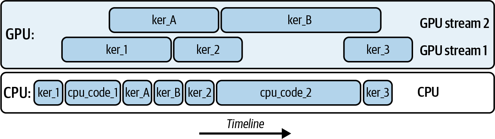
这里，ker_A 和 ker_B 在 stream 2 上运行，而 ker_1、ker_2 和 ker_3 在 stream 1 上运行。只要硬件资源允许，kernel 之间以及不同 CUDA stream 之间都可能发生 overlap。
当 stream 异步执行 kernel operation 时，CPU 可以继续执行工作（cpu_code_1 和 cpu_code_2）。下面是使用两个 CUDA stream 发出这五个 kernel 的代码：
#include<cstdio>#include<cuda_runtime.h>__global__voidker_A(){/* ... do some work ... */}__global__voidker_B(){/* ... do some work ... */}__global__voidker_1(){/* ... do some work ... */}__global__voidker_2(){/* ... do some work ... */}__global__voidker_3(){/* ... do some work ... */}intmain(){// 1) Create two CUDA streamscudaStream_tstream1,stream2;cudaStreamCreateWithFlags(&stream1,cudaStreamNonBlocking);cudaStreamCreateWithFlags(&stream2,cudaStreamNonBlocking);// 2) Define your grid/block sizesdim3grid(128);dim3block(256);// 3) Launch ker_1 on stream1ker_1<<<grid,block,0,stream1>>>();// 4) CPU code 1 runs immediately (asynchronously wrt GPU)printf("CPU code 1 executing\n");// ... do some host-side work here ...cpu_code_1();// 5) Launch ker_A on stream2ker_A<<<grid,block,0,stream2>>>();// 6) Launch ker_B on stream1ker_B<<<grid,block,0,stream1>>>();// 7) Launch ker_2 on stream2ker_2<<<grid,block,0,stream2>>>();// 8) CPU code 2 runs immediatelyprintf("CPU code 2 executing\n");// ... do some other host-side work here ...cpu_code_2();// 9) Launch ker_3 on stream1ker_3<<<grid,block,0,stream1>>>();// 10) Wait for work on each stream to finishcudaStreamSynchronize(stream1);cudaStreamSynchronize(stream2);// 11) Clean upcudaStreamDestroy(stream1);cudaStreamDestroy(stream2);return0;}
ker_1 被加入 stream1 后，控制权立即返回 CPU。GPU 执行 ker_1 时，host 可以运行 cpu_code_1()。与此同时，将 ker_A 加入 stream2、将 ker_B 加入 stream1；随后把 ker_2 加入 stream2，穿插执行 cpu_code_2，再把 ker_3 加入 stream1。最后对每个 stream 执行 synchronization，等待其中的工作完成，再销毁 stream 并清理资源。
这个示例展示了五个 kernel execution 如何在两个不同 stream 之间 overlap。稍微增加复杂度，并基于第 10 章的内容，下面展示同一个 warp-specialization pipeline 如何使用 CUDA stream。
// Run the warp-specialized kernel in multiple CUDA streams.#include<cuda_runtime.h>#include<cuda/pipeline>#include<cooperative_groups.h>namespacecg=cooperative_groups;#define TILE_SIZE 128#define TILE_ELEMS (TILE_SIZE * TILE_SIZE)// re-using fromChapter 10__global__voidwarp_specialized_pipeline(constfloat*__restrict__A_global,constfloat*__restrict__B_global,float*__restrict__C_global,intnumTiles);intmain(){constintNUM_STREAMS=2;// keep it small; tune as neededconstintbatches=8;// in-flight batchesconstsize_telems=TILE_ELEMS;// elements per batchconstsize_tbytes=elems*sizeof(float);// Create streams that do NOT synchronize with the legacy default streamcudaStream_ts[NUM_STREAMS];for(inti=0;i<NUM_STREAMS;++i)cudaStreamCreateWithFlags(&s[i],cudaStreamNonBlocking);// Allocate pinned host buffers so H2D/D2H can truly overlapfloat*hA=nullptr,*hB=nullptr,*hC=nullptr;cudaMallocHost(&hA,batches*bytes);cudaMallocHost(&hB,batches*bytes);cudaMallocHost(&hC,batches*bytes);// ... initialize hA/hB ...for(intb=0;b<batches;++b){constintsid=b%NUM_STREAMS;float*dA=nullptr,*dB=nullptr,*dC=nullptr;cudaMallocAsync(&dA,bytes,s[sid]);cudaMallocAsync(&dB,bytes,s[sid]);cudaMallocAsync(&dC,bytes,s[sid]);cudaMemcpyAsync(dA,hA+b*elems,bytes,cudaMemcpyHostToDevice,s[sid]);cudaMemcpyAsync(dB,hB+b*elems,bytes,cudaMemcpyHostToDevice,s[sid]);constdim3block(96);// three warps: loader(0), compute(1), storer(2)constdim3grid(1);constsize_tshmem=3*elems*sizeof(float);// [A|B|C] per tile// Reuse theChapter 10kernel exactly as-iswarp_specialized_pipeline<<<grid,block,shmem,s[sid]>>>(dA,dB,dC,/*numTiles=*/1);cudaMemcpyAsync(hC+b*elems,dC,bytes,cudaMemcpyDeviceToHost,s[sid]);cudaFreeAsync(dA,s[sid]);cudaFreeAsync(dB,s[sid]);cudaFreeAsync(dC,s[sid]);}for(inti=0;i<NUM_STREAMS;++i){cudaStreamSynchronize(s[i]);cudaStreamDestroy(s[i]);}cudaFreeHost(hA);cudaFreeHost(hB);cudaFreeHost(hC);return0;}
这里复用了 warp-specialized pipeline，并展示 stream 如何增加第二层 overlap：当 stream 1 计算 batch n 时，stream 2 可以对 batch n+1 执行 DMA load，同时把 batch n−1 的结果 copy 回 host。kernel 内部的 cuda::pipeline overlap 不变。
本章后面会继续加入 thread block cluster 以增加复杂度；但先讨论 stream 如何将 compute 与 data transfer overlap，以巩固 CUDA stream 基础及其在 GPU performance engineering 中的作用。
例如，可以将每个kernel launch 和 memory copy 加入自己的 stream。这样，SM 可以执行 kernel，同时两个专用 DMA engine（一个负责 Host → Device、一个负责 Device → Host transfer）并行搬运数据；具体并发能力取决于设备。
由于 SM compute pipeline 与 DMA engine 相对独立，CUDA stream 可以让 kernel compute 与 data transfer overlap。但如果 kernel 已耗尽 SM 吞吐，或 copy pipeline 已使 memory bandwidth 饱和，继续增加 overlap 不会改善性能。
当 compute 和 memory throughput 饱和时，两个并发 operation 可能各自只达到约 50%，因为它们争用同一资源。应通过 GPU profiling 确认饱和阈值。
例如，AI model training 或 inference workload 可以将工作拆成 batch：在 stream 0 中执行 batch 0 的 kernel，同时让 stream 1 调用 cudaMemcpyAsync() 将 batch 1 从 host copy 到 device，如图 11-2所示。
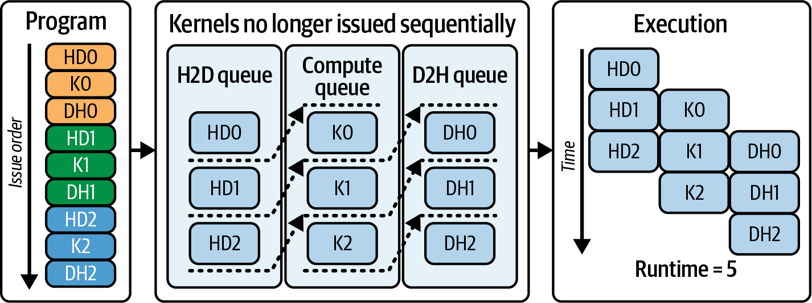
在至少有两个 copy engine 的现代 GPU 上（可查询 deviceProp.asyncEngineCount()），可以扩展为三路 overlap：stream 0 运行 batch 0 kernel，stream 1 将 batch 1 从 host copy 到 device，stream 2 将上一 batch 的结果写回 host。还可以使用更多 stream；不过实际并发受 engine、带宽、资源和依赖限制。该模式用 compute 隐藏 data-transfer latency，反之亦然，减少 idle time。
要实现这种并发行为，kernel 和传输必须满足若干条件。首先，异步 transfer 使用的 host pointer 必须是 page-locked（pinned）。如果在 pageable memory 上调用 cudaMemcpyAsync()，runtime 会先执行 host-side staging copy 到 pinned memory；在 staging 完成前，调用线程和发起该 operation 的 stream 可能被阻塞。
因此该 transfer 不再具备预期的异步特性。调用线程被阻塞时，GPU 仍可能在其他 stream 中 overlap compute 和 copy，但这一次 transfer 自身不会正确 overlap。若要实现真正异步的 host transfer，应使用 pinned host memory。
在 PyTorch DataLoader 中设置 pin_memory=True，会将 host buffer page-lock，使 DMA 能直接将数据传入 GPU memory。这样 copy 可能与 compute overlap，并立即把控制权返回 host。Pageable memory 会触发隐藏 staging copy，破坏该 transfer 的 overlap。
其次，应优先评估异步 allocation/deallocation routine：cudaMallocAsync() 和 cudaFreeAsync()，而不是同步且可能阻塞的 cudaMalloc() 或 cudaFree()。PyTorch 等 framework 提供使用 CUDA asynchronous、stream-ordered memory allocator 的选项。目标是在 allocation 时不阻塞所有 active stream。
异步 stream-ordered allocator 允许每个 stream 请求或归还 device memory，而不必等待其他 stream。这样，一个 stream 中的 memory operation 通常不会阻塞其他 stream，并可减少不必要的 global synchronization。下一节将详细讨论该 allocator。
PyTorch 默认 CUDA caching allocator 具有 stream awareness；正常从缓存满足 allocation 时，通常不会执行 device-wide synchronization。只有需要通过 cudaMalloc 向系统申请更多 memory 时，才可能出现额外同步。因此大多数 tensor allocation/free 不会阻塞其他 stream；启用 cudaMallocAsync backend 在许多 workload 中还可能减少 fragmentation、改善复用。
在启动 PyTorch script 前设置环境变量 PYTORCH_ALLOC_CONF=backend:cudaMallocAsync，即可请求使用 CUDA 的 stream-orderedallocator。设置后，PyTorch tensor memory 的 allocation（cudaMallocAsync()）和 free（cudaFreeAsync()）会按调用顺序加入相应 CUDA stream；未设置时，PyTorch 使用自身的 caching allocator。
如果使用 legacy cudaMalloc(...)，要注意它可能是返回前执行 device-wide synchronization 的 blocking operation，从而阻塞其他 stream 的工作。具体同步行为取决于 CUDA runtime 和 allocator 状态，但不应假设 allocation 一定与其他 stream 完全并行。
相比之下，使用 stream-ordered allocator 时，cudaMallocAsync(...) 会将 allocation request 记录到将使用该 memory 的同一 CUDA stream 中，无论该 stream 正在执行 kernel 还是 memory operation。它不会按 API 设计主动对其他 stream 做全局串行化，但资源池、依赖和回收仍可能影响实际并发。
PyTorch 使用的 CUDA stream-ordered allocator 可减少不必要的 device-wide lock/synchronization 和 allocation overhead；实际效果取决于 backend 与 memory pool。
例如，stream 0 执行 batch N 的 attention kernel，stream 1 将 batch N+1 从 host copy 到 device，stream 2 为 batch N+2 加入 cudaMallocAsync(...)。由于 allocation request 按 stream order 进入 stream 2 的队列，stream 0 和 stream 1 通常可以继续执行；仍需考虑 memory pool 和硬件资源。
使用 stream-aware allocator 时，每个 mini-batch 的 GPU memory 可以按 stream order allocation，而不必主动阻塞其他 stream。这对按 batch 分配 scratch space 的 LLM pipeline 很重要；在 heavy memory churn 下，异步 allocator 可能减少 stall，但不能保证完全没有阻塞。
如果 pipeline 为每个 mini-batch 分配 scratch buffer（LLM training 和 inference 中很常见），stream-ordered memory allocator 尤其有用。例如，每个 mini-batch 可能需要独立 temporary workspace 来保存 attention key/value 或 intermediate activation buffer；此时可按 stream order 请求 GPU 上的 scratch buffer。
Allocation 通常从 per-device memory pool 满足。可以使用 cudaMemPoolSetAttribute() 调整 pool 的 release threshold，在归还 memory 给 OS 与保留 memory 以便复用之间权衡。较高 threshold 会让 pool 更久地保留已分配 memory，减少归还 OS 的次数和重复 allocation/deallocation；代价是可能占用更多显存。
下面的示例使用 cudaMallocAsync、cudaFreeAsync 和 cudaMemPoolSetAttribute() 实现基于 stream 的 overlap，展示如何通过 CUDA stream 将 memory allocation、data transfer 和 kernel execution 组织成 pipeline：
// initialize the async memory allocatorcudaMemPool_tpool;intdevice=-1;cudaGetDevice(&device);// Current devicecudaDeviceGetDefaultMemPool(&pool,device);// Desired number of bytes to keep in pool before// releasing back to the OS (tune as needed)uint64_tthreshold=/* e.g., prop.totalGlobalMem / 2 */;// bytescudaMemPoolSetAttribute(pool,cudaMemPoolAttrReleaseThreshold,&threshold);cudaStream_tstream1,stream2;cudaStreamCreateWithFlags(&stream1,cudaStreamNonBlocking);cudaStreamCreateWithFlags(&stream2,cudaStreamNonBlocking);// Allocate memory using stream-ordered async allocationvoid*d_data1,*d_result1;void*d_data2,*d_result2;size_tdataSizeBytes=N*sizeof(float);// Use cudaMallocAsync as a best practice in modern multi-stream appscudaMallocAsync(&d_data1,dataSizeBytes,stream1);cudaMallocAsync(&d_result1,dataSizeBytes,stream1);cudaMallocAsync(&d_data2,dataSizeBytes,stream2);cudaMallocAsync(&d_result2,dataSizeBytes,stream2);// Asynchronously copy first chunk and launch its kernel in stream1cudaMemcpyAsync(d_data1,h_data1,dataSizeBytes,cudaMemcpyHostToDevice,stream1);computeKernel<<<gridDim,blockDim,0,stream1>>>((float*)d_data1,(float*)d_result1);cudaMemcpyAsync(h_result1,d_result1,dataSizeBytes,cudaMemcpyDeviceToHost,stream1);// In parallel, do the same on stream2cudaMemcpyAsync(d_data2,h_data2,dataSizeBytes,cudaMemcpyHostToDevice,stream2);computeKernel<<<gridDim,blockDim,0,stream2>>>((float*)d_data2,(float*)d_result2);cudaMemcpyAsync(h_result2,d_result2,dataSizeBytes,cudaMemcpyDeviceToHost,stream2);// Wait for both streams to finishcudaStreamSynchronize(stream1);cudaStreamSynchronize(stream2);// CleanupcudaFreeAsync(d_data1,stream1);cudaFreeAsync(d_result1,stream1);cudaFreeAsync(d_data2,stream2);cudaFreeAsync(d_result2,stream2);cudaStreamDestroy(stream1);cudaStreamDestroy(stream2);
这里创建两个 CUDA stream（stream1 和 stream2），并使用 cudaMallocAsync 分配 device memory；allocation request 按各自 stream 排序。随后为两个独立数据 chunk 发出工作。
在 stream1 上，先执行 host 到 device 的异步 copy（H2D），再启动 compute kernel，最后把结果从 device 异步 copy 回 host（D2H）。同时，在 stream2 上对第二个数据 chunk 执行同样流程。
由于这些 operation 被加入不同 stream，GPU 可能在它们之间执行 overlap：stream1 的 kernel 可与 stream2 的 H2D copy 并发；stream1 kernel 完成后，D2H copy 还可能与 stream2 kernel overlap，前提是 copy engine、带宽和资源允许。
示例利用 CUDA stream 和 stream-ordered allocation，使 memory allocation 与 kernel computation 交错进行。错峰调度可能减少 idle time；如果不使用 stream-ordered allocation，可能需要预先分配所有 memory（增加 footprint），或承担额外 synchronization 开销。
使用 cudaMallocAsync，memory management 可以集成到 CUDA stream 中，使 per-stream allocation/deallocation 不必主动触发 global device synchronization；实际依赖和 pool 行为仍需检查。
此外，stream-ordered allocator 支持为 variable-length buffer（例如 token cache 或 intermediate activation）发出细粒度 memory request。随后可以在同一 stream 中启动依赖这些 buffer 的 kernel，利用 stream order 表达先后关系。
要获得较高 throughput，需要调节 data-chunk size，并遵守 GPU 的 concurrency limit。现代 GPU 可能提供多个 copy engine，可重叠 H2D 与 D2H transfer；应查询 deviceProp.asyncEngineCount，再据此规划 overlap。
GPU 对整个 device 上可并发执行的 kernel 数量有硬件与资源限制。具体上限取决于架构、driver、kernel 资源和调度；超过 active-kernel capacity 后，额外 launch 会排队等待资源槽位，如第 5 章所述。
共享 SM 的 kernel 只有在合计 register、shared memory 和 thread block 需求符合 SM 资源限制时，才可能同时执行。因此必须平衡 chunk（tile）size、launch order 和每个 kernel 的资源使用。
chunk 太小会使 copy engine 和 SM 资源利用不足；chunk 太大或同时加入太多 kernel，则可能超过 kernel slot 或耗尽 per-SM resource，导致 stall。
总之，经过正确调优后，CUDA stream 与 stream-ordered memory allocator（cudaMallocAsync）可以帮助 data transfer、kernel execution 和 memory management 交错执行，减少不必要排队；是否能让多个 DMA engine 和 SM 持续繁忙，仍需由目标 workload 的 profile 验证。
CUDA stream 的 nonblocking behavior与 stream-ordered memory allocator 结合，对 LLM training 和 inference workload 很重要。这些 workload 可以在多个 stream 间重叠 computation 与 data movement，以提高 GPU 利用率并减少端到端延迟。
LLM 还经常动态分配 scratch memory，这正是上一节介绍的 stream-ordered memory allocator 所支持的场景。例如运行 transformer layer 时，可能需要额外的 shared memory 或 device memory（称为 scratch memory），暂存矩阵乘法结果，再将其交给 softmax。
由于 LLM workload 的不同 mini-batch 可能有不同长度（token count），可以使用 stream-ordered memory allocator 为每个 input batch 在 GPU 上分配适合其大小的 scratch buffer，从而减少过度分配；实际复用策略还需考虑 memory pool 和生命周期。
如果使用旧式 blocking allocation API（cudaMalloc(...) 与 cudaFree(...)）动态分配 scratch buffer，每次 allocation/deallocation 都可能与整个 GPU 同步；如果调用路径触发 global device synchronization，pending kernel 和 copy 完成前就无法实现预期 overlap。
Global device synchronization 可能严重破坏性能。尽量避免在 CUDA stream 中使用 blocking call，例如 cudaMalloc() 和 cudaFree()；优先使用 event 和 stream wait。也不要在不必要时对 default stream 0 调用 cudaStreamSynchronize(0)。
在一个 stream 为 batch N 执行 attention kernel、另一个 stream 准备 batch N+1 的 pipeline 中，如果第二个 stream 调用 blocking cudaMalloc(...) 并触发设备级同步，就可能阻塞其他 stream；这会破坏 data transfer、computation 与 memory management 之间的 overlap。
可使用 stream-ordered allocator 的 cudaMallocAsync() 与 cudaFreeAsync()。这些 API 将 device-memory allocation/free work 加入指定 stream，按 stream order 管理；它们不应被理解为自动消除所有依赖，实际同步仍由 stream、memory pool 和生命周期决定。
例如，某个 stream 需要为一批输入的 attention 分配 16 MB scratch buffer，可以调用 cudaMallocAsync(&scratchPtr, scratchBytes, stream1)。该请求被记录到 stream1 的 operation queue，通常不会主动要求其他 stream 等待，如图 11-3所示。
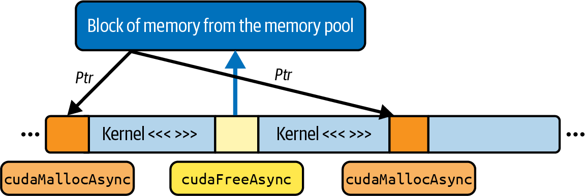
即使 stream1 的 allocation 正在处理，其他 stream 仍可继续 launch kernel、copy data 或执行自身工作。当 CUDA runtime 完成 memory reservation 后，stream1 可继续推进并在新区域启动 attention kernel；实际行为还受 pool、资源和依赖影响。
与 legacy cudaMalloc 不同，cudaMallocAsync 按 stream order 记录 allocation；它通常不会主动 stall 其他 stream，但 allocation 的依赖和内存池压力仍可能产生等待。
在 LLM training 和 inference 中，variable-length sequence 常导致 scratch-buffer size 波动。如果 batch N 每条 sequence 有 512 个 token，而 batch N+1 有 1,024 个 token，attention module 对后者需要更多空间，复用前一个 batch 的 allocation 可能不够。使用 cudaMallocAsync() 可以按 stream order 请求更大的 buffer，而不必主动停止其他 stream。
典型 LLM 的自回归逐 token 生成阶段（即 decoding）会使用不断增长的 key/value cache。每生成一个 token，就要向 per-sequence buffer 追加新的 KV pair；buffer 增长后，可能需要重新分配或扩展 scratch region。cudaMallocAsync(...) 允许在运行 attention kernel 的同一 stream 中安排该请求；上游 data loading 和下游 result copying 则可在各自 stream 中继续推进，前提是依赖关系正确。
CUDA stream 在 LLM 中的另一个用途是大型模型的 layerwise pipeline。假设把 transformer-based LLM 分成两半，分别在不同 CUDA stream 运行：stream 0 执行 layer 0–5，stream 1 执行 layer 6–11；两半之间需要用于 activation 的 intermediate buffer。
每当 stream 0 完成一个 mini-batch 后，它可以为下一 batch 的 activation 安排 cudaMallocAsync(...)。只要没有额外依赖阻塞，stream 1 可以继续对前一 batch 的结果计算 layer 6–11，同时 stream 0 为下一 batch 的 input 准备 memory。
相反，如果在该 pipeline 中使用 legacy cudaMalloc(...)，每次为下一 mini-batch 或扩展 KV cache 分配 scratch region 时，都可能触发 device-wide synchronization，破坏跨 stream 的 computation/data movement overlap。
总结来说，LLM 经常需要用于 attention、layer normalization、softmax、KV cache 或 intermediate activation 的临时 buffer，这些统称为 scratch buffer。
在不同 stream 中使用 cudaMallocAsync(...) 与 cudaFreeAsync(...) 管理 scratch buffer，可以把 allocation/free 纳入对应 stream order，减少因 memory management 导致的 global cross-stream stall；仍应显式处理 buffer 的使用与释放依赖。
这样，其他 stream 可以继续运行，attention kernel、data transfer 和 host-side work 得以尽可能 overlap；大型实时 LLM workload 的 GPU 利用率是否提高，需要通过端到端 profile 验证。
如果没有显式创建或指定stream，operation 会进入 legacy default stream，通常称为 stream 0。在 legacy default-stream 语义下，它有两个重要行为：
加入 stream 0 的 operation 严格按序执行。在同一 stream 0 中，两个 kernel 或一个 copy 与一个 kernel 不能彼此 overlap，因为 stream 会序列化自身 command。
在 legacy default-stream 模型中，加入 stream 0 的 operation 会等待其他 blocking stream 中此前已加入的工作完成；反过来，nondefault blocking stream 中的 operation 也会受此前 stream 0 工作约束。stream 0 因而形成隐式的 device-wide ordering point。使用 cudaStreamNonBlocking 创建的 stream 不参与这类 legacy default-stream 隐式同步。
由于同一 stream 内的严格顺序，把所有工作都放入 stream 0 会阻止这些 operation 彼此并发；例如，同一 stream 中的 kernel 与 copy 不会 overlap。隐式跨 stream 依赖还可能使 GPU 等待 default-stream ordering point。
要获得可控并行性，除非确实需要与 legacy blocking stream 建立隐式顺序，否则应避免在 performance-critical 路径依赖 stream 0，优先使用显式 stream 和 event dependency。
为缓解 legacy default stream 的“global barrier”行为，CUDA 引入了 per-thread default stream，简称 PTDS。
在 per-thread default-stream 语义下，每个 CPU thread 的 default stream 相互独立。启用 PTDS 后，每个 host thread 都有自己的隐式 default stream。
加入 thread A default stream 的 operation 不会因 PTDS 语义自动等待 thread B default stream 的工作；硬件资源允许时可以并发。反向关系也相同。
PTDS 广泛用于 multithreaded CUDA application，以避免 host thread 之间的隐式 default-stream barrier。可以使用 nvcc --default-stream per-thread 编译，或在包含 CUDA header 之前定义 CUDA_API_PER_THREAD_DEFAULT_STREAM=1；后者是编译期宏语义，不应笼统当作运行时环境变量开关。
启用 PTDS 后，每个 host CPU thread 的 default stream 类似普通 stream，不会与其他 thread 的 default stream 隐式同步。不同编译单元或库混用 legacy 与 per-thread 语义容易产生难以发现的 ordering 问题，应统一配置并显式表达依赖。
使用 PTDS 时，没有显式 stream 参数的 kernel launch、copy 或 allocation 会进入 thread-local default queue。只有同一 host thread default stream 内的 command 按序执行，不会仅因 default-stream 语义对其他 thread 的 stream 施加隐式 global barrier。
总之，启用 PTDS 后，legacy default-stream 的跨 thread 隐式 barrier 被移除。不同 CPU thread 在各自 default stream 发出的 kernel launch 或 memory copy，在依赖与硬件资源允许时可能 overlap，如图 11-4所示；PTDS 本身不保证实际并发。
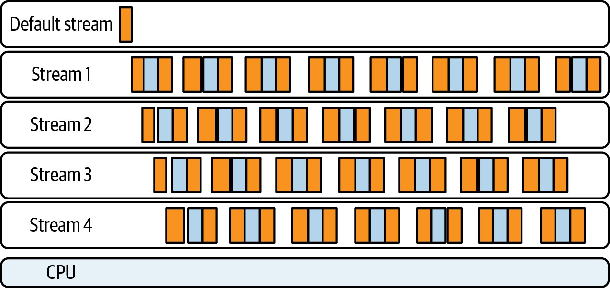
在 performance-critical code 中依赖 default-stream behavior容易造成隐藏依赖。在 legacy 语义下，加入 default stream（stream 0）的工作会与其他 blocking stream 建立隐式顺序；cudaStreamNonBlocking stream 是重要例外。
在 performance-critical code 中，最好创建并使用明确命名的 nondefault explicit stream，避免 operation 意外进入 stream 0。在 legacy blocking-stream 模型下，一个误发到 stream 0 的 kernel 或 copy 可能阻塞其他相关 stream。cuBLAS、Thrust 等许多 library 支持显式指定 stream；应按照各 library API 将 handle 或 execution policy 绑定到预期 stream。
PyTorch 的 operation 通常遵循当前 CUDA stream，并不意味着 cuDNN/cuBLAS 调用总是自动使用各自独立 stream。Distributed backend 常在专用 communication stream 上调度 NCCL operation，以便在依赖允许时 overlap gradient communication 与 compute；stream priority 和具体调度由 framework/backend 配置决定。
自行管理 stream，或使用 per-thread default，可以更明确地控制 concurrency。下面是在 CUDA C++ 中创建 explicit nondefault stream 的示例（第 13 章和第 14 章将介绍 PyTorch stream）：
cudaStream_tstreamA,streamB;cudaStreamCreateWithFlags(&streamA,cudaStreamNonBlocking);cudaStreamCreateWithFlags(&streamB,cudaStreamNonBlocking);myKernel<<<grid,block,0,streamA>>>(...);// streamAcudaMemcpyAsync(dest,src,size,cudaMemcpyHostToDevice,streamB);// streamB
这里，streamA 和 streamB 都以 cudaStreamNonBlocking 创建，依赖和资源允许时可 overlap；它们不会因 legacy default-stream 语义而与 stream 0 隐式同步。原文称后续 stream 0 调用会迫使二者等待，并不适用于此处的 nonblocking flag。
如果 explicit stream 使用默认 blocking flag，则 legacy stream 0 的 pending task 可能形成隐式顺序；本示例的 nonblocking stream 不受该规则约束。即便如此，仍建议在 performance-critical 路径使用显式 event 表达依赖，而不是依赖 default-stream 副作用。
总之，多 host-thread application 可考虑启用 PTDS，使各 CPU thread 的 default stream 不再彼此隐式同步；对于 performance-critical kernel 和 copy，则使用 streamA、streamB 这样的 explicit stream。
这样可以减少与另一个 explicit stream、其他 thread default stream 或 legacy stream 0 的意外隐式同步；但数据 hazard 仍必须用 event、wait 或其他 dependency 明确处理。使用 cudaStreamNonBlocking 创建 stream，可使其不与 legacy default stream 隐式同步，从而避免这一类隐藏 barrier。
Default stream 可能带来性能问题，下面概括 legacy default、per-thread default 和 explicit（nondefault）stream 的同步特征：
cudaStreamLegacy)它与 legacy blocking stream 之间存在双向隐式顺序，但不与 cudaStreamNonBlocking stream 隐式同步。若需要可控 concurrency，不要依赖该隐式行为。
cudaStreamPerThread)每个 host thread 的 default stream 是独立的；它仍会序列化自身 command，但不会仅因 PTDS 语义等待或阻塞其他 thread 的 default stream。
cudaStreamCreateWithFlags())Explicit stream 是独立 queue，可以通过 cudaStreamWaitEvent() 等方式插入显式依赖；blocking explicit stream 仍可能参与 legacy default-stream 隐式同步。
使用 default 与 explicit（nondefault）stream 时，可遵循以下建议：
误发到 stream 0 的 kernel 或 copy 可能使 legacy blocking stream 等待。某些没有显式 stream 参数的 API 会使用 default stream，因此应查阅具体 API，并在可用时明确指定 stream。
如果 application 有多个 CPU thread 分别加入 GPU work，可以使用 PTDS，避免这些 thread default stream 之间的隐藏 barrier。也可以用 cudaStreamCreateWithFlags(&stream, cudaStreamNonBlocking) 创建不与 legacy stream 0 隐式同步的 explicit stream。
Explicit stream 便于表达 kernel 与 memory copy 的 overlap。可向 <<<...>>>()、cudaMemcpyAsync() 或 cudaMallocAsync() 传入 nondefault cudaStream_t；如果还需避免 legacy stream 0 的隐式关系，应使用适当的 nonblocking flag。
cudaStreamWaitEvent() to coordinate fine‐grained dependencies instead of cudaStreamSynchronize()细粒度 dependency 应优先使用 stream event，而不是在 default stream 上调用 cudaStreamSynchronize()。只在确实需要 host 等待某个 stream 完成的明确边界调用 cudaStreamSynchronize()；它只等待指定 stream，但会阻塞调用 host thread。
PTDS 通过编译选项或在包含 CUDA header 前定义宏配置，不是通过 device flag 在运行时切换。创建 explicit stream 时还应明确选择 blocking 或 cudaStreamNonBlocking；“任何 stream 0 调用都会形成 global barrier”并不适用于 nonblocking stream。
简而言之，legacy default stream（stream 0）会与其他 blocking stream 形成隐式 ordering point；这并不等同于对所有 cudaStreamNonBlocking stream 都建立 barrier。为避免不可见 stall，performance-critical kernel 和 copy 应使用显式命名 stream，例如通过 cudaStreamCreateWithFlags 创建，并依据数据依赖插入 event/wait。
如果程序有多个 CPU thread 分别发出 GPU work，可以启用 PTDS，使各 thread 的 default stream 相互独立；同时应统一编译配置，避免 legacy 与 PTDS 语义混用。
需要 overlap 的两个 operation（例如 copy 和 kernel）最好分别加入明确的 nondefault stream，并确保 host memory、copy engine、SM 资源和 event dependency 都满足条件。这样可避免依赖 stream 0 的隐藏 ordering，并让 GPU 在资源允许时获得可控并行性。
即使多个 stream 和DMA engine 正在 overlap，某个 stream 的 operation 仍可能必须等待另一个 stream。考虑 producer-consumer stream pair：producer stream 负责加载和准备数据，consumer stream 负责处理。
此时容易想到在 host 侧调用 cudaDeviceSynchronize()。但它会让调用 CPU thread 等待 device 上所有 stream 和 operation 完成，通常会扩大等待范围。也可以调用 cudaStreamSynchronize()，如图 11-5所示；它会阻塞调用 host thread，直到指定 stream queue 中的 operation 完成。
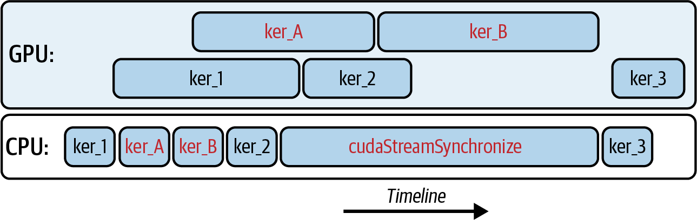
cudaStreamSynchronize() 会让 CPU 等待指定 stream 中的 operation 完成更合适的方式是使用 CUDA event 为 stream 提供细粒度 synchronization：在产生数据的 stream 中记录 cudaEvent_t，再让 consumer stream 等待该 event。
例如，在 producer stream 中启动 producer kernel；数据准备好后记录 event（代码中对应 cudaEventRecord(doneEvent, stream0)）。consumer stream 在启动 consumer kernel 前调用 cudaStreamWaitEvent(stream1, doneEvent, 0)。这样只有 consumer stream 在 event 完成前等待，host thread 和其他无关 stream 可以继续执行，如图 11-6所示。
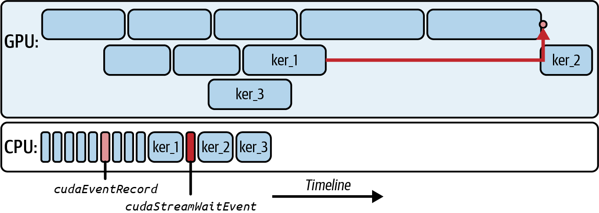
除了用于 interstream coordination，CUDA event 也可用于 GPU device 与 CPU host 的通信。可以从 host 使用 cudaLaunchHostFunc() 注册 host callback。
假设 GPU kernel 在某 stream 完成后，需要立即在 host 回收 custom memory pool。可以从 host 使用 cudaLaunchHostFunc() 注册 callback，并将其加入该 stream；随后启动 kernel。
kernel 完成并到达 callback 前置位置后，CUDA runtime 会在 host thread 执行 callback，由 CPU 更新 memory pool；不需要 polling loop，也不必调用 full cudaDeviceSynchronize()。
GPU work 完成并满足 stream order 后，CUDA runtime 会在 host thread 执行callback。这样 CPU 不必持续轮询，也不会为无关 GPU work 添加全局等待。
不要在 cudaLaunchHostFunc() 启动的 host callback 内调用需要 device progress 的 CUDA API。例如在 callback 内调用 cudaMemcpy() 可能造成 deadlock：callback 运行于 CUDA runtime 管理的 host thread，而 device 或 stream 可能正等待 callback 返回。
callback 最好限制为纯 CPU-side task，例如释放或回收 host memory。这样可避免 callback 试图启动新的 GPU work，而 GPU 同时等待 callback 完成所造成的循环依赖。
当多个 stream 并行运行时，经常需要在它们之间协调和同步。CUDA event 是一种主要的 cross-stream synchronization 机制，能将依赖范围限制在相关 stream，而无需让 host thread 或整个 device 等待。
Event 类似 stream 在 command queue 特定位置记录的 marker。其他 stream 或 host 可以等待该 marker，以判断某个 event（例如 kernel 完成）是否发生。与等待所有 stream 的 cudaDeviceSynchronize() 不同，event 允许在 stream 之间表达细粒度 ordering。
可以用 stream/event 确保 transformer layer 所需数据在 compute 前已准备好；也可以在 pipeline parallelism 中确保 GPU 0 生产 tensor 后 GPU 1 再消费它，同时不影响无关工作。
例如，四个 stream（Streams A–D）组成 pipeline，部分 operation 之间存在依赖。可以使用 CUDA event 强制这些依赖，如图 11-7所示。
为确保 stream B 只有在 stream A 生产数据后才开始处理，可以在 stream A 中记录 event，让 stream B 在继续前等待它；类似地，stream D 可以等待 stream B。通过串联 event，可以保持跨 stream 的正确 ordering，同时并发处理不同 batch。
深度学习 framework 经常使用这种 event-based synchronization，将 gradient computation 与 all-reduce communication overlap。compute stream 在 gradient ready 时记录 event，communication stream 等待该 event 后启动 NCCL operation，从而与剩余 computation overlap。
总之，CUDA event 是面向 device signaling 的轻量机制。stream 到达 command queue 中的特定位置时记录 event，其他 stream 可以高效等待它。这样可以在不强制 global wait 的情况下编排复杂依赖图，并支持 multistream LLM workload 的 pipeline execution。
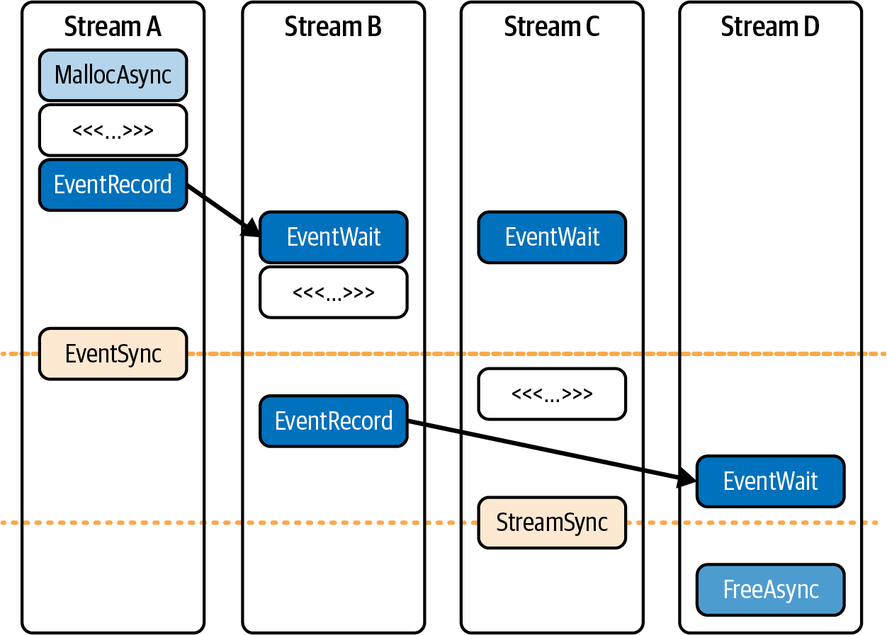
第 10 章演示了如何使用 warp 专门化与 CUDA Pipeline API，在单个内核内隐藏内存延迟。该节启动了一个持久化且采用 warp 专门化的内核：每个线程块被拆分为三类 warp，分别负责加载、计算和存储。这些 warp 共享一块连续共享内存及一个两阶段（双缓冲）CUDA Pipeline（<cuda::pipeline>）对象来协调工作。
现在保留同一个 warp-specialized device kernel，通过不同 CUDA stream 驱动多个 batch，形成两层 pipeline：
loader ↔ compute ↔ storer 使用各自 pipeline，在依赖和资源允许时 overlap。
当 stream 0 计算 batch t 时，stream 1 可以 DMA-load batch t+1，stream 2 回传 batch t−1 的结果。实际 overlap 需要适当的 stream、pinned host memory、copy engine 和依赖管理；stream-ordered allocator 可减少 allocation/copy 对其他 work 的串行化。
如果多个 block 需要同一 tile，可以使用第 10 章介绍的 thread block cluster + DSMEM 路径减少重复 global load。但 cooperative/cluster launch 受并发驻留约束，可能影响其他 cooperative kernel；这里的 stream pattern 主要用于 host ↔ device overlap，也适用于 noncooperative kernel。
如果瓶颈是 device 内 tile reuse，可评估 thread block cluster；如果瓶颈是 host ↔ device communication 和 batching，可评估 CUDA stream。二者可以组合，但最终应由 profile 确认瓶颈和收益。
下一个 kernel 每个 block 使用三个 warp（0 = loader，1 = compute，2 = storer）和两个 pipeline 进行 stage ping-pong，因此需要 6 * TILE_SIZE * sizeof(float) dynamic shared memory（[A0|B0|C0|A1|B1|C1]）。这里使用两个独立的 block-scope pipeline，每个深度为 2：一个用于 loader → compute（pipe_lc）handoff，另一个用于 compute → storer（pipe_cs）handoff。
此外，使用 double-buffered shared memory，使 kernel 能在计算 tile i、存储 tile i−1 的同时加载 tile i+1。因此后续代码中会看到两个 cuda::pipeline object，以及 shared memory 中的 “[A|B|C] × 2 stages”。这两个 pipeline 是 kernel 内部加深 overlap 的设计选择；两种 kernel style 都可以与 CUDA stream 结合。代码如下：
#include<cooperative_groups.h>// thread_block, etc.#include<cuda/pipeline>// CUDA Pipeline APInamespacecg=cooperative_groups;// shmem bytes = 2(stages)×3(buffers)×TILE_SIZE×sizeof(float)=6×TILE_SIZE×4// = 6 * 1024 * 4 = 24,576 B (24 KB) << 227 KB SMEM// We keep this at 1024 (versus going higher) as a safe starting point// (good occupancy balance)#define TILE_SIZE 1024// one tile = 1,024 floats per buffer (1-Dimension)// Alignment / size guards for vectorized copiesstatic_assert((TILE_SIZE%(32*4))==0,"TILE_SIZE must be multiple of 128 for float4 vectorization");// If you cannot guarantee 16B alignment or sizes, handle// the tail/ragged edges with a fallback 4B loop.// Three warps per block: 0 loads, 1 computes, 2 stores.// Two block-scoped pipelines (each depth=2) implement ping-pong across tiles.__global__voidwarp_specialized_two_pipelines(constfloat*__restrict__A_global,constfloat*__restrict__B_global,float*__restrict__C_global,intnumTiles){thread_blockcta=this_thread_block();// Stage s∈{0,1}: [A_s | B_s | C_s], each length TILE_SIZEextern__shared__floatshared_mem[];// loader -> compute pipeline (2 in-flight stages)usingpipe_state=cuda::pipeline_shared_state<cuda::thread_scope_block,2>;__shared__alignas(pipe_state)unsignedcharstate_lc_storage[sizeof(pipe_state)];__shared__alignas(pipe_state)unsignedcharstate_cs_storage[sizeof(pipe_state)];auto*state_lc=reinterpret_cast<pipe_state*>(state_lc_storage);auto*state_cs=reinterpret_cast<pipe_state*>(state_cs_storage);if(threadIdx.x==0){new(state_lc)pipe_state();new(state_cs)pipe_state();}cta.sync();autopipe_lc=cuda::make_pipeline(cta,state_lc);// compute -> storer pipeline (2 in-flight stages)autopipe_cs=cuda::make_pipeline(cta,state_cs);constintwarp_id=threadIdx.x>>5;// 0,1,2constintlane_id=threadIdx.x&31;autowarp=tiled_partition<32>(cta);// Prime first tile handled by this blockconstintfirst=blockIdx.x;if(first>numTiles){constintstage0=first&1;float*A0=shared_mem+stage0*3*TILE_SIZE;float*B0=A0+TILE_SIZE;pipe_lc.producer_acquire();#pragma unrollfor(intchunk=0;chunk<TILE_SIZE;chunk+=32*4){if(warp_id==0){cuda::memcpy_async(warp,reinterpret_cast<float4*>(A0+chunk)+lane_id,reinterpret_cast<constfloat4*>(A_global+size_t(first)*TILE_SIZE+chunk)+lane_id,sizeof(float4),pipe_lc);cuda::memcpy_async(warp,reinterpret_cast<float4*>(B0+chunk)+lane_id,reinterpret_cast<constfloat4*>(B_global+size_t(first)*TILE_SIZE+chunk)+lane_id,sizeof(float4),pipe_lc);}}pipe_lc.producer_commit();}// Block-scoped collectives remain CTA-uniformpipe_lc.consumer_wait();cta.sync();// Compute consumes loader output and signals storer.if(warp_id==1){#pragma unrollfor(intchunk=0;chunk<TILE_SIZE;chunk+=32){C_buf[chunk+lane_id]=A_buf[chunk+lane_id]+B_buf[chunk+lane_id];}}cta.sync();pipe_lc.consumer_release();pipe_cs.producer_acquire();pipe_cs.producer_commit();pipe_cs.consumer_wait();cta.sync();// Storer waits on compute and writes back.if(warp_id==2){#pragma unrollfor(intchunk=0;chunk<TILE_SIZE;chunk+=32){C_global[offset+chunk+lane_id]=C_buf[chunk+lane_id];}}cta.sync();pipe_cs.consumer_release();// Loader prefetches next tile after the current stage is released.constintnext=tile+gridDim.x;if(next<numTiles){constintnext_stage=next&1;float*A_next=shared_mem+next_stage*3*TILE_SIZE;float*B_next=A_next+TILE_SIZE;pipe_lc.producer_acquire();if(warp_id==0){#pragma unrollfor(intchunk=0;chunk<TILE_SIZE;chunk+=32*4){cuda::memcpy_async(warp,reinterpret_cast<float4*>(A_next+chunk)+lane_id,reinterpret_cast<constfloat4*>(A_global+size_t(next)*TILE_SIZE+chunk)+lane_id,sizeof(float4),pipe_lc);cuda::memcpy_async(warp,reinterpret_cast<float4*>(B_next+chunk)+lane_id,reinterpret_cast<constfloat4*>(B_global+size_t(next)*TILE_SIZE+chunk)+lane_id,sizeof(float4),pipe_lc);}}pipe_lc.producer_commit();}// Launch requirements: blockDim.x = 96 (3 warps), gridDim as needed,// dynamic shared memory = 6 * TILE_SIZE * sizeof(float).}
这里有几个值得注意的性能要点。首先，要求 A0、B0、A_global + base 和 B_global + base 按 16 字节对齐。如果某条路径未按 16 字节对齐，就在未对齐的前导段和尾段回退到 4 字节循环。
每个 lane 传输 16 字节（float4/int4）符合现代 GPU 的常见最佳实践，可使一个 warp 达到 128 字节的合并访问，从而有助于降低流水线开销。
接下来假定 TILE_SIZE 是 128 的倍数（32 个 lane × 4 个 float）。如果不是，则用标量循环处理尾部。此外，在适用时，可在流水线集体操作中使用分阶段协作拷贝，例如 cuda::memcpy_async 配合 float4，或使用等价的合并式协作拷贝循环。这样可以保持异步流水线语义，并降低每个 tile 的拷贝开销。
下面是主机端驱动程序：它在非阻塞 stream 间轮转 batch，并使用页锁定主机内存和按 stream 排序的分配器（cudaMallocAsync ÷ cudaFreeAsync）。它启动前述的 warp_specialized_two_pipelines 内核：
#include<cstdio>#include<cuda_runtime.h>#define TILE_SIZE 1024#define NUM_STREAMS 2#define BATCHES 8// Device kernel__global__voidwarp_specialized_two_pipelines(constfloat*__restrict__A_global,constfloat*__restrict__B_global,float*__restrict__C_global,intnumTiles);intmain(){// Create nonblocking streams (do NOT use legacy default stream)cudaStream_ts[NUM_STREAMS];for(inti=0;i<NUM_STREAMS;++i)cudaStreamCreateWithFlags(&s[i],cudaStreamNonBlocking);// Pinned host buffers so cudaMemcpyAsync truly overlapsfloat*hA=nullptr,*hB=nullptr,*hC=nullptr;constsize_tbytesPerBatch=TILE_SIZE*sizeof(float);cudaMallocHost(&hA,BATCHES*bytesPerBatch);cudaMallocHost(&hB,BATCHES*bytesPerBatch);cudaMallocHost(&hC,BATCHES*bytesPerBatch);// Initialize inputsfor(intb=0;b<BATCHES;++b){for(inti=0;i<TILE_SIZE;++i){hA[b*TILE_SIZE+i]=float(i);hB[b*TILE_SIZE+i]=1.0f;}}// Enqueue batches in a round-robin across streamsfor(intb=0;b<BATCHES;++b){cudaStream_tst=s[b%NUM_STREAMS];float*dA=nullptr,*dB=nullptr,*dC=nullptr;cudaMallocAsync(&dA,bytesPerBatch,st);// stream-ordered allocatorcudaMallocAsync(&dB,bytesPerBatch,st);cudaMallocAsync(&dC,bytesPerBatch,st);cudaMemcpyAsync(dA,hA+size_t(b)*TILE_SIZE,bytesPerBatch,cudaMemcpyHostToDevice,st);cudaMemcpyAsync(dB,hB+size_t(b)*TILE_SIZE,bytesPerBatch,cudaMemcpyHostToDevice,st);constdim3block(96);// 3 warps: loader/compute/storerconstdim3grid(1);constsize_tshmem=6*TILE_SIZE*sizeof(float);//[A0|B0|C0|A1|B1|C1]// Each batch is one tile in this 1-D examplewarp_specialized_two_pipelines<<<grid,block,shmem,st>>>(dA,dB,dC,/*numTiles=*/1);cudaMemcpyAsync(hC+size_t(b)*TILE_SIZE,dC,bytesPerBatch,cudaMemcpyDeviceToHost,st);cudaFreeAsync(dA,st);// stream-ordered freecudaFreeAsync(dB,st);cudaFreeAsync(dC,st);}// Clean upfor(inti=0;i<NUM_STREAMS;++i){cudaStreamSynchronize(s[i]);cudaStreamDestroy(s[i]);}cudaFreeHost(hA);cudaFreeHost(hB);cudaFreeHost(hC);return0;}
这里每个 stream 都承载自己的操作序列：分配 → H2D → 内核 → D2H → 释放。由于分配和拷贝按 stream 顺序入队，且主机缓冲区是页锁定的，GPU 的拷贝引擎就能与另一个 stream 中 SM 的计算重叠。这就是内核间层，它补充了 warp 专门化产生的内核内重叠；后者在第 10 章中介绍过。
具体而言，该示例让共享内存保存两组缓冲区，每组含三个长度为 TILE_SIZE 的缓冲区，以便使用一组时准备下一 tile。带有两个阶段的 <cuda::pipeline> 为各 tile 提供双缓冲，并强制正确顺序，使加载、计算和存储 warp 能在不同 tile 上重叠。内核在循环前预置第一个 tile，随后在计算 tile i 时预取 tile i + gridDim.x。
单独来看，这个 warp 专门化内核通过在每个 tile 内重叠三种角色来隐藏内存延迟。不过，单个 warp 专门化内核一次只能处理一批 tile。
为了让 GPU 持续处理多个 batch，并让这些 batch 的 H2D 传输、内核计算和 D2H 传输相互重叠，我们在不同 CUDA stream 中启动这个 warp 专门化内核的多个实例；每个 batch 都使用按 stream 排序的分配器。
这第二层流水线——内核间并发——让连续的 mini-batch 以波次方式流过 GPU。这样，当一个 batch 的内核正在 stream 0 中计算时，另一个 batch 的数据仍可在 stream 1 中传入；与此同时，更早一个 batch 的结果可能正在 stream 2 中传回主机。
实践中，我们选择少量 stream（通常为两个或三个）并在它们之间轮转。每个 stream 使用 cudaMallocAsync 分配自己的设备缓冲区，用 cudaMemcpyAsync 异步拷贝输入数据，启动 warp 专门化内核处理这些缓冲区，将结果异步拷回主机，最后用 cudaFreeAsync 释放缓冲区。
由于这些操作分别在特定 stream 中入队，它们可以与其他 stream 中的同类操作重叠。在配备多个拷贝引擎和按 stream 排序分配器的现代 GPU 上，这种模式有望同时利用芯片的多个部分，从而显著提高利用率；但实际重叠程度受拷贝引擎数量（查询 cudaDeviceProp::asyncEngineCount）、带宽和内核占用率限制。
当一个内核中的加载 warp 等待全局内存读取时，下一个 batch 的 H2D 拷贝可以已在拷贝引擎上进行。当上一个 batch 中的存储 warp 正把数据写回全局内存时，另一个 stream 中的分配器可以为下一个 batch 获取内存，而不必强制执行全局同步。
本质上，第 10 章的 warp 专门化示例展示了如何在线程块内重叠加载、计算和存储，让一个内核隐藏内存延迟。本章的多 stream 示例在此基础上进一步展示：让许多分别处理不同 batch 的内核同时进入 GPU，并在整个流水线中重叠主机 ↔ 设备传输、计算以及设备 ↔ 主机传输。
现代 GPU 具备多个拷贝引擎，并支持异步内存分配。结合 Tensor Core，它们可以并行工作，形成由内核内 warp 专门化和内核间 stream 组成的两级流水线策略。对于 LLM 工作负载，这些机制有助于提高硬件利用率，但能否接近峰值仍需根据具体工作负载进行测量和验证。
现在把本章及前面章节的内容组合起来：通过多个 stream 推送多个在途 mini-batch，每个 stream 都启动一个协作式线程块集群 warp 专门化内核。这代表了在最新 GPU 硬件上进行 CUDA 性能优化的一种高级组合。
尽管为了完整性我们介绍这一主题，但需要注意的是，由于组合方式非常复杂，除高度专业化的研究项目和极度关注延迟的推理引擎外，很少会采用全部这些技术。不过，它仍值得学习，因为这个代码示例把目前为止学到的许多概念组合到了一起。
第 10 章展示了单个线程块内的 warp 专门化，以及如何使用 DSMEM 将 warp 专门化与线程块集群结合。这样，一个 leader 线程块只需加载一次 tile，线程块集群中的每个线程块都从这份共享的片上副本进行计算，从而避免重复的全局内存加载。
本示例复用了这一模式：leader 使用 block 作用域流水线分阶段准备拷贝；所有线程块都通过 cluster.map_shared_rank 读取数据，因此能够继承数据复用带来的收益。
在前面的 CUDA stream warp 专门化示例中，每个线程块负责自己共享内存区域中的三个流水线阶段——加载、计算和存储。现在将此前的实现扩展为线程块集群流水线，使加载、计算和存储 warp 分布在线程块集群中。这不同于之前局限在单个线程块内的实现。
下面给出线程块集群、warp 专门化与 CUDA stream 结合的示例代码。这里选择 NUM_STREAMS = 2，使主机能够在不同 CUDA stream 中排入两个独立的启动操作。我们复用第 10 章“线程块集群中的 warp 专门化”小节里的 warp_specialized_cluster_pipeline 实现，并为其加入 CUDA stream：
// Warp specialization across a thread block cluster using DSMEM// and a block scoped pipeline, launched from multiple CUDA streams#include<cuda_runtime.h>#include<cuda/pipeline>#include<cooperative_groups.h>#include<algorithm>namespacecg=cooperative_groups;#define TILE_SIZE 128// 3×TILE_ELEMS×4 bytes=196,608 bytes < 227 KB SMEM#define TILE_ELEMS (TILE_SIZE * TILE_SIZE)#define NUM_STREAMS 2#define CLUSTER_BLOCKS 4// blocks per cluster along x (tune to device)// ---- Device helpers ----__device__voidcompute_rows_from_ds(constfloat*__restrict__A_src,constfloat*__restrict__B_src,float*__restrict__C_dst,introw_begin,introw_end,intlane_id){for(introw=row_begin+lane_id;row<row_end;row+=warpSize){for(intcol=0;col<TILE_SIZE;++col){floatacc=0.0f;#pragma unrollfor(intk=0;k<TILE_SIZE;++k){acc+=A_src[row*TILE_SIZE+k]*B_src[k*TILE_SIZE+col];}C_dst[row*TILE_SIZE+col]=acc;}}}// Clustered, warp-specialized kernel (leader loads once, others consume DSMEM)extern"C"__global__voidwarp_specialized_cluster_pipeline(constfloat*__restrict__A_global,constfloat*__restrict__B_global,float*__restrict__C_global,intnumTiles){thread_blockcta=this_thread_block();cluster_groupcluster=this_cluster();extern__shared__floatsmem[];float*A_tile_local=smem;float*B_tile_local=A_tile_local+TILE_ELEMS;float*C_tile_local=B_tile_local+TILE_ELEMS;// Leader uses a block-scoped pipeline to stage A/B exactly once per tileusingpipe_state_t=cuda::pipeline_shared_state<cuda::thread_scope_block,1>;__shared__alignas(pipe_state_t)unsignedcharpipe_storage[sizeof(pipe_state_t)];auto*pipe_state=reinterpret_cast<pipe_state_t*>(pipe_storage);if(threadIdx.x==0){new(pipe_state)pipe_state_t();}cta.sync();autopipe=cuda::make_pipeline(cta,pipe_state);constintlane_id=threadIdx.x&31;constintwarp_id=threadIdx.x>>5;autowarp=tiled_partition<32>(cta);constintcluster_rank=cluster.block_rank();constdim3cluster_dims=cluster.dim_blocks();constintblocks_in_cluster=cluster_dims.x*cluster_dims.y*cluster_dims.z;// Each iteration handles one tile per cluster (1-D cluster along x)for(inttile=blockIdx.x/cluster_dims.x;tile<numTiles;tile+=gridDim.x/cluster_dims.x){constsize_toffset=static_cast<size_t>(tile)*TILE_ELEMS;// Leader block stages A and B once for the entire cluster.// Block-scoped pipeline collectives stay CTA-uniform.if(cluster_rank==0){pipe.producer_acquire();if(warp_id==0){cuda::memcpy_async(warp,A_tile_local,A_global+offset,TILE_ELEMS*sizeof(float),pipe);cuda::memcpy_async(warp,B_tile_local,B_global+offset,TILE_ELEMS*sizeof(float),pipe);}pipe.producer_commit();// Make visible inside leader before publishingpipe.consumer_wait();pipe.consumer_release();}// Publish to all blocks in the clustercluster.sync();constfloat*A_src=cluster.map_shared_rank(A_tile_local,0);constfloat*B_src=cluster.map_shared_rank(B_tile_local,0);// Divide rows among blocks in the clusterconstintrows_per_block=(TILE_SIZE+blocks_in_cluster-1)/blocks_in_cluster;constintrow_begin=std::min(cluster_rank*rows_per_block,TILE_SIZE);constintrow_end=std::min(row_begin+rows_per_block,TILE_SIZE);// Compute warp produces this block’s band into local SMEMif(warp_id==1){compute_rows_from_ds(A_src,B_src,C_tile_local,row_begin,row_end,lane_id);}// Ensure the storer sees computed rowscta.sync();// Storer warp writes band back to globalif(warp_id==2){for(introw=row_begin+lane_id;row<row_end;row+=warpSize){for(intcol=0;col<TILE_SIZE;++col){C_global[offset+row*TILE_SIZE+col]=C_tile_local[row*TILE_SIZE+col];}}}// Done with this tile; allow leader to reuse bufferscluster.sync();}// Dynamic shared memory size: 3 * TILE_ELEMS * sizeof(float)}// ---- Host driver: stream-staged batches + clustered kernel launch ----voidlaunch_warp_specialized_cluster_pipeline_multistream(constfloat*h_A,// Host input A: length = numBatches * batchLengthconstfloat*h_B,// Host input B: length = numBatches * batchLengthfloat*h_C,// Host output C: length = numBatches * batchLengthintbatchLength,// elems per batch; must be multiple of TILE_ELEMSintnumBatches){// Basic validationif(batchLength%TILE_ELEMS!=0){fprintf(stderr,"batchLength must be a multiple of TILE_ELEMS (%d)\n",TILE_ELEMS);return;}constintnumTiles=batchLength/TILE_ELEMS;// Nonblocking streams avoid legacy default-stream barrierscudaStream_tstreams[NUM_STREAMS];for(inti=0;i<NUM_STREAMS;++i)cudaStreamCreateWithFlags(&streams[i],cudaStreamNonBlocking);// Size and launch geometryintdevice=0;cudaGetDevice(&device);cudaDevicePropprop{};cudaGetDeviceProperties(&prop,device);// grid.x must be a multiple of CLUSTER_BLOCKSconstintblocksPerGrid=prop.multiProcessorCount*CLUSTER_BLOCKS;constdim3blockDim(96);// 3 warps: loader/compute/storerconstsize_tshmemBytes=3ull*TILE_ELEMS*sizeof(float);// Cluster attributescudaLaunchAttributeattr[2]{};attr[0].id=cudaLaunchAttributeClusterDimension;attr[0].val.clusterDim=dim3(CLUSTER_BLOCKS,1,1);attr[1].id=cudaLaunchAttributeNonPortableClusterSizeAllowed;attr[1].val.nonPortableClusterSizeAllowed=1;// Enqueue batches round-robin across streamsfor(intb=0;b<numBatches;++b){cudaStream_tst=streams[b%NUM_STREAMS];float*dA=nullptr,*dB=nullptr,*dC=nullptr;constsize_tbytes=static_cast<size_t>(batchLength)*sizeof(float);// Stream-ordered allocator avoids global synccudaMallocAsync(&dA,bytes,st);cudaMallocAsync(&dB,bytes,st);cudaMallocAsync(&dC,bytes,st);// H2D (host pointers should be pinned for true overlap)cudaMemcpyAsync(dA,h_A+static_cast<size_t>(b)*batchLength,bytes,cudaMemcpyHostToDevice,st);cudaMemcpyAsync(dB,h_B+static_cast<size_t>(b)*batchLength,bytes,cudaMemcpyHostToDevice,st);// Clustered launch configvoid*args[]={&dA,&dB,&dC,(void*)&numTiles};cudaLaunchConfig_tcfg{};cfg.gridDim=dim3(blocksPerGrid);cfg.blockDim=blockDim;cfg.dynamicSmemBytes=shmemBytes;cfg.stream=st;cfg.attrs=attr;cfg.numAttrs=2;// Launch the clustered kernel (cooperative/cluster launch)cudaKernel_tk;cudaGetKernel(&k,warp_specialized_cluster_pipeline);void*fptr=reinterpret_cast<void*>(k);cudaLaunchKernelExC(&cfg,fptr,args);// D2H and cleanupcudaMemcpyAsync(h_C+static_cast<size_t>(b)*batchLength,dC,bytes,cudaMemcpyDeviceToHost,st);cudaFreeAsync(dA,st);cudaFreeAsync(dB,st);cudaFreeAsync(dC,st);}for(inti=0;i<NUM_STREAMS;++i){cudaStreamSynchronize(streams[i]);cudaStreamDestroy(streams[i]);}}
本示例使用 cudaLaunchKernelExC 配置集群启动。协作式启动（包括集群启动）必须按照启动约束提供足够资源，使其线程块保持驻留。这通常会限制并发度；不过，在资源允许时，协作式内核仍可能与其他工作交错执行。并发并无保证，因为它取决于拓扑和启动配置。（注意：其他 stream 中的数据传输和内核仍可能重叠，但受资源限制和启动约束影响。）
与第 10 章一样，我们以集群维度启动内核，使线程块加入 cluster_group 并访问彼此的分布式共享内存。leader 线程块通过 block 作用域的 cuda::thread_scope_block 分阶段准备拷贝，所有线程块则使用 cluster.map_shared_rank 读取 leader 准备的 tile。
借助集群作用域和分布式共享内存，加载阶段由 leader 在每个集群中执行一次，而计算和存储则在集群的各线程块之间并发运行。和前面一样，每个 warp 的 warp_id 决定其角色；各 warp 持续遍历所有 tile，在同步轮转中完成获取、计算和存储。
通过加入 CUDA stream，并在不同 CUDA stream 中启动该内核的独立副本（NUM_STREAMS = 2），我们可以让 GPU 同时处理多个输入 batch。每个 stream 执行以下步骤：
使用 cudaMallocAsync 为每个 batch 分配设备缓冲区。
使用 cudaMemcpyAsync 将输入从主机分阶段传到设备。
使用 cudaLaunchKernelExC 启动集群式 warp 专门化内核。
使用 cudaMemcpyAsync 将输出拷回主机。
使用 cudaFreeAsync 释放设备缓冲区。
由于每个 stream 都将自己的协作式启动以及异步拷贝和释放操作入队，即使同一时间只能运行一个协作式内核，主机仍可让多个 mini-batch 保持在途。请记住，GPU 会串行化协作式内核启动，因为每个协作式内核都会同时固定其所有线程块（代码示例后还会再次强调这一限制）。
使用多个 stream（NUM_STREAMS = 2）仍可让主机端分配和拷贝与前一个内核的执行重叠。例如，当 stream 0 的线程块集群处理 tile n 时，stream 1 可以异步分配缓冲区（cudaMallocAsync）并将 tile n+1 拷入设备内存，而 stream 2 则可能把 tile n–1 的结果写回主机。
协作式内核必须占用 GPU 上它所需的全部线程块槽位（CTA）。因此其他协作式启动无法同时运行，因为这些 CTA 资源已经全部被占用。
实践中，stream 0 发出协作式启动并开始执行时，stream 1 可以立即将自己的启动操作入队；但第二个启动会一直等待，直到 stream 0 的内核完成。
不过，stream 0 一完成，stream 1 的启动就能立即开始，因为它的输入已经由 cudaMemcpyAsync 预先准备好，所需缓冲区也已由 cudaMallocAsync 分配。
通过结合线程块集群，我们创建了跨越多个线程块的两层流水线。具体来说，将内核间 CUDA stream 与内核内 warp 专门化结合起来：在 leader CTA 内实现 block 作用域流水线，并配合集群范围同步和 DSMEM 共享。这个两层流水线可充分利用硬件资源，但实际效果仍取决于工作负载和资源约束。
第一层中，线程块集群流水线让加载、计算和存储 warp 跨所有线程块协作。线程块集群可以使用 TMA multicast，将一次全局内存 tile 传输复制到集群内每个线程块的共享内存中；multicast 的作用域局限于该线程块集群。也就是说，在适用的访问模式下，集群可以避免为同一 tile 重复发起全局加载。第二层中，多个 stream 让主机端的分配、拷贝和内核启动彼此隐藏。
简而言之，这些组合技术试图在 grid 层面和主机到设备层面同时隐藏内存延迟。在现代 GPU 上，它们可能使硬件利用率接近峰值，并提高 LLM 工作负载的吞吐量；具体收益需要通过实际测量确认。
在许多场景中，DRAM 带宽等内存层次瓶颈，以及 NCCL all-reduce 等模型并行通信，才是主要限制。因此，当内核已经接近饱和 HBM 带宽、stream 也已隐藏 CPU → GPU 延迟时，再叠加 warp 专门化、进而叠加线程块集群所带来的少量 SM 利用率提升，通常很难抵消其高昂的工程成本。实践中，大多数真实 LLM 训练和推理工作负载从前面介绍的简单设计中就能获得足够收益，例如双缓冲内核或使用 CUDA stream 的两阶段流水线。
在多张 GPU 上训练或服务 LLM 时，CUDA stream 可让本地计算、点对点传输、集合通信、数据准备和内存管理重叠，以避免任一设备空闲。例如，假设将 Transformer 模型拆分到两张 GPU：GPU 0 处理第 0–3 层，GPU B 处理第 4–7 层。在 GPU A 上可这样编写：
// Stream 0 on GPU A: compute layers 0–3myTransformerLayers0to3<<<gridA,blockA,0,stream0_A>>>(inputActivationsA,outputActivationsA);cudaEvent_teventA,eventFromA;cudaEventCreateWithFlags(eventA,cudaEventDisableTiming);// lowers overhead for sync-only eventscudaEventCreateWithFlags(eventFromA,cudaEventDisableTiming);// lowers overhead for sync-only eventscudaEventRecord(eventA,stream0_A);
与此同时，CPU 已经解码或准备好下一个 microbatch（N+1），并将其通过 cudaMemcpyAsync 发往页锁定的主机缓冲区。这样，当 GPU A 的 stream 0 完成 batch N 的前向传播时，batch N+1 的 CPU 到 GPU 拷贝可以立即开始，无需等待。
同时，调用 cudaStreamWaitEvent(stream1_A, eventA, 0)，确保 stream1_A 在 outputActivationsA 就绪后，才启动写入 GPU B 内存的 NVLink/PCIe 直接拷贝，如下所示：
// Stream 1 on GPU A: wait for layer computation, then copy to GPU BcudaStreamWaitEvent(stream1_A,eventA,0);cudaMemcpyPeerAsync(destActivationsB,/*dstGPU=*/1,outputActivationsA,/*srcGPU=*/0,bytes,stream1_A);
一旦记录 eventA，GPU A 的 stream0 就可以立即启动 batch N+1 的下一个前向内核，并使用 cudaMemcpyAsync 将输入从页锁定主机缓冲区拷入设备内存，而不会阻塞。在 GPU B 上，则在拷贝开始或结束时记录对应事件：
// Stream 1 on GPU A: after peer copy starts,// record eventFromAcudaEventRecord(eventFromA,stream1_A);
随后，GPU B 等待数据到达并运行第 4–7 层：
// Stream 1 on GPU B: wait for data arrival, then run layers 4–7cudaStreamWaitEvent(stream1_B,eventFromA,0);myTransformerLayers4to7<<<gridB,blockB,0,stream1_B>>>(destActivationsB,nextActivationsB);
这种显式的事件—等待模式确保 GPU B 的第 4–7 层只会在点对点拷贝完成后开始计算。同时，GPU B 的 stream0_B 可以预取权重或执行其他准备工作。
这里的 P2P 传输运行在 GPU A 的 DMA 拷贝引擎上，不占用 GPU A 的 SM。因此，GPU A 的计算 stream 可以立即继续处理 batch N+1，无需负责管理数据传输。
结果形成三路重叠：GPU A 的 SM 可在 stream0_A 中立即启动 batch N+1；GPU A 的对等 DMA 引擎可在 stream1_A 中将 batch N 的激活传送至 GPU B；GPU B 的 SM 则可在 stream0_B 中运行 batch N，或在其 stream1_B 中开始 batch N。通过将工作划分到不同 stream，并在主机上使用页锁定内存，可将 P2P 与 H2D 延迟隐藏在持续的计算和数据准备之后。
需要在多个 GPU 之间同步梯度或广播参数时，NCCL 会通过低占用率设备内核大规模处理通信，并在 NVLink、PCIe 或 InfiniBand 上驱动 GPUDirect P2P 或 RDMA。NCCL 会在内部将张量拆分为多个连续 chunk。
这种设计表明，每张 GPU 都可拥有多个 stream：包括承担主要工作的计算 stream、接收输入数据的接收 stream，以及进行归约的通信 stream。为每种角色使用专用 stream，并为通信 stream 赋予更高优先级，可以实现最佳重叠。事实上，PyTorch 等框架通常会在这些专用高优先级 stream 上运行 NCCL 集合通信以进行网络传输。
NCCL 会根据 NVLink 或 PCIe 拓扑选择环形或树形算法。以图 11-8所示的四 GPU 环为例，其中有四个 chunk（1–4）。
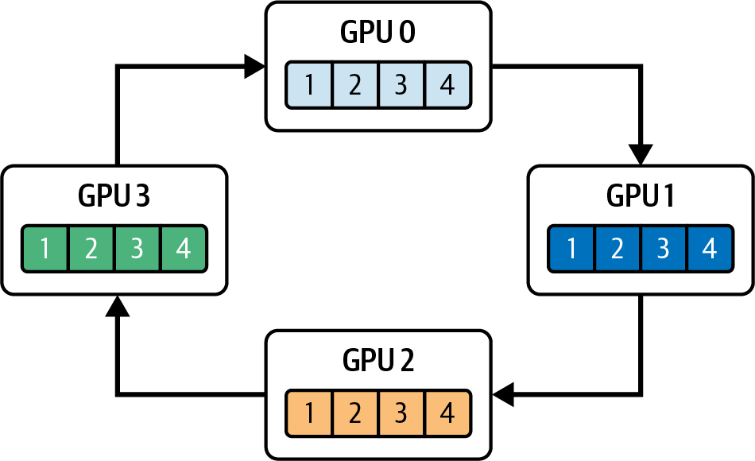
在这个环形 all-reduce 中，每张 GPU 将 chunk i 发送给相邻 GPU（k → k+1），同时从另一相邻 GPU（k−1 → k）接收 chunk i−1，并通过设备内核经 NVLink 或 PCIe 移动和归约这些 chunk。
通过将这些分块发送和接收流水化，NCCL 可以充分利用 NVLink。当 chunk i 从 GPU 0 → GPU 1 传输时，chunk i−1 同时从 GPU 1 → GPU 2 传输，依此类推，从而减少空闲间隙。代码大致如下：
// In a high-priority communication stream on each GPU:cudaEventRecord(eventK,computeStream);cudaStreamWaitEvent(commStream,eventK,0);ncclAllReduce(// this is asynchronousgradBuffer,gradBuffer,numElements,ncclFloat,ncclSum,comm,commStream);
NCCL 仅使用少量 SM 线程块，因此可在 SM 上以低占用率方式编排跨 NVLink 或 NVSwitch 的分块发送/接收 + 归约。与此同时，例如正在对第 k+1 层执行反向传播的主计算 stream 可继续运行。all-reduce 完成后，便如下面所示记录事件：
cudaEventRecord(eventAllReduceDone,commStream);// signals collective completioncudaStreamWaitEvent(computeStream,eventAllReduceDone,0);// Now apply optimizer updates on computeStream...
请记住，all-reduce 等 NCCL 集合操作是异步的，会立即返回控制权。在调用后记录事件，并让计算 stream 等待该事件，可以确保归约真正完成后计算 stream 才继续执行。
NCCL 内核专门针对低占用率下的最大带宽进行了优化，每张 GPU 只使用少量 SM 资源。实践中，得益于针对互连调优的低占用率内核，NCCL 可用每张 GPU 上少量线程块饱和 NVLink 或 PCIe 带宽。此外，若网络硬件支持，还可将部分集合聚合操作卸载至 NVIDIA SHARP，进一步释放 SM 资源以进行更有价值的计算。
NIXL 提供统一的高吞吐 API，用于跨 NVLink、RDMA 和存储后端执行点对点及解耦式传输，因此通常直接使用 NIXL API，而不是自行调用 cudaMemcpyPeerAsync。NIXL 可以跨不同内存层级和互连快速、异步地移动数据。当使用 nixlCommStream 调用 NIXL 操作时，数据会被分块，并通过 GPUDirect RDMA 或 NVLink 等可用的最快传输机制在网络上流水化传输。
与 NCCL 一样，NIXL 可以为分块点对点和集合数据传输使用专用高优先级 stream。这有助于减少排队延迟，使拷贝命令在发出后不久就到达 GPU 的 DMA 引擎，并可能抢先执行低优先级工作。
将这些传输 stream 标记为高优先级，并不意味着它们会预先占用 SM 资源；它只保证拷贝命令就绪时，会优先于其他低优先级操作发出。
实践中，拷贝引擎会利用计算内核尚未占用的 DRAM 到 DRAM 带宽。因此，它们实际上主要使用内存互连上空闲的带宽来移动数据。
这种设计可以最大化重叠：一个 stream 在拷贝引擎上驱动 cudaMemcpyPeerAsync 传输或 NCCL 归约内核时，另一个 stream 的 SM 内核仍可继续执行前向/反向工作，第三个 stream 则可以执行异步分配或事件等待。这样有助于让各类硬件单元保持忙碌，同时减少资源争用。
通过 cudaMemcpyPeerAsync 启动的点对点传输完全在 GPU 拷贝引擎上运行，因此只消耗 DRAM 到 DRAM 带宽，不消耗 SM 周期。相反，all-reduce 等集合操作被实现为设备内核：它们使用少量 SM，同时将互连带宽推向峰值。
同时，会异步分配和释放激活或混合精度梯度的临时缓冲区，以避免全局停顿。例如，在每张 GPU 的计算 stream 内可调用以下代码：
cudaMallocAsync(&tempBuffer,tempBytes,computeStream);// ...use tempBuffer in kernels...cudaFreeAsync(tempBuffer,computeStream);
由于按 stream 排序的内存分配器记录这些操作时不会强制设备范围同步，CUDA 在分配或释放内存时不会暂停 P2P、NCCL 和 NIXL 等其他 stream。这有助于避免缓冲区管理打断计算与通信的重叠流水线。
这正是前面讨论过的按 stream 排序内存分配器，只是现在应用到了多个 GPU。使用它有助于避免内存管理成为分布式工作负载的瓶颈。
将一次迭代的前向、反向、P2P 拷贝、NCCL all-reduce、内存释放以及事件等待操作入队后，可以把这条执行链（例如一次训练或推理迭代）捕获为一个 CUDA Graph。
具体来说，调用 cudaStreamBeginCapture 后，向该 stream 入队的每个操作（例如内核启动、计算、通信、数据传输和事件）都会作为节点插入图中。这些操作可以包括 ncclAllReduce()、cudaMemcpyAsync、cudaMemcpyPeerAsync、cudaMallocAsync、cudaFreeAsync、cudaEventRecord、cudaStreamWaitEvent 及其依赖。使用 cudaStreamEndCapture(stream, &graph) 结束捕获。代码大致如下：
cudaStreamBeginCapture(streamA,cudaStreamCaptureModeGlobal);computeGradientsLayer1<<<...,0,streamA>>>(...);ncclAllReduce(...,comm,streamB);computeGradientsLayer2<<<...,0,streamA>>>(...);ncclAllReduce(...,comm,streamB);cudaStreamEndCapture(streamA,&graph);
捕获提交到多个 stream 的工作时，使用 cudaStreamCaptureModeGlobal，这样同一线程在所有参与 stream 上入队的操作都会记录到同一个捕获会话中，并保留跨 stream 依赖；否则，只会捕获传给 cudaStreamBeginCapture 的那个 stream 上入队的操作。
随后可以使用 cudaGraphLaunch() 实例化并启动该图，以接近零的 CPU 开销重放整个 DAG。只需捕获一次完整的多 GPU 迭代，就能消除每个操作单独入队和启动的开销。
此外，CUDA Graph 支持条件节点（例如梯度裁剪），因此低频分支也可以保留在图的逻辑中。下一章将更详细地介绍 CUDA Graph；现在需要理解它与 CUDA stream 的关系，包括 cudaStreamBeginCapture 和 cudaStreamEndCapture。
PyTorch 等现代框架隐藏了许多复杂性。例如，PyTorch 的 DistributedDataParallel 会自动在不同 stream 中调度数据传输、计算和通信，也可以使用 CUDA Graph 减少每次迭代的开销。但 CUDA Graph 并不会自动启用，必须使用支持捕获的代码和 API 显式开启。
构建 CUDA Graph 时不一定要显式使用这些 CUDA stream 开始与结束 API；但如果希望在向 stream 入队操作的同时捕获 graph，它们会很方便（下一章将更详细介绍 CUDA Graph）。
CUDA stream 通过重叠 CPU、DMA 引擎和 SM 上的工作，为多 GPU 系统提供精细调节的流水线。在 CPU 侧，使用 cudaMemcpyAsync 将数据送入页锁定主机缓冲区，为下一个 batch 做准备；GPU 同时执行当前工作负载，从而确保 batch N+1 的输入在 batch N 完成前就绪。与此同时，GPU 之间的点对点传输（使用 cudaMemcpyPeerAsync）可以安排在专用 stream 上，并通过 cudaStreamWaitEvent 同步，在不阻塞正在进行的计算的情况下交接激活值或梯度。
如前所述，NCCL 或 NIXL 等集合通信库使用单独的 stream 运行低占用率通信内核。这样，当一个 GPU 正在归约梯度或广播参数时，同一 GPU 上的其他 stream 仍可继续执行本地计算内核（例如后续层的前向或反向传播）。此外，按 stream 顺序使用 cudaMallocAsync 和 cudaFreeAsync，可以避免为临时缓冲区进行全局同步，使分配和释放与计算、通信并发进行。
将完整迭代（例如 CPU 分阶段准备、P2P 传输、计算内核、NCCL 调用、分配、释放以及事件/等待）捕获为 CUDA Graph，可以进一步降低 CPU 开销。图实例化后，调用 cudaGraphLaunch() 即可一次性重放记录的 DAG，消除每次调用的入队开销，并自动保留所有依赖。
这些技术结合起来，可以让每个 GPU 的 SM 流水线、拷贝引擎和互连链路尽量保持忙碌：一个 stream 运行矩阵乘法内核，另一个执行点对点拷贝，第三个执行集合通信，而 CPU 为下一个 microbatch 准备数据。
简而言之，可使用 CUDA stream 编排跨多个层的工作，并让计算、内存操作和数据传输重叠。这种方法将点对点和集合通信延迟隐藏在活跃计算之后，使每个硬件单元尽可能发挥能力。总体而言，CUDA stream 可为许多 AI 工作负载（包括 LLM 训练和推理）最大化吞吐量、利用率和效率。
另一种内核间流水线与通信方式称为程序化依赖启动（Programmatic Dependent Launch，PDL）。PDL 允许一个内核在设备端使用同一 CUDA stream 直接触发另一个内核执行，无需 CPU 参与。例如，主内核 A 可以触发正在等待其信号的次内核 B。
这种触发甚至可发生在内核 A 尚未完成执行之前。为此，它使用 cudaTriggerProgrammaticLaunchCompletion()，如图 11-9所示。这里内核 B 通过调用 cudaGridDependencySynchronize() 等待内核 A。
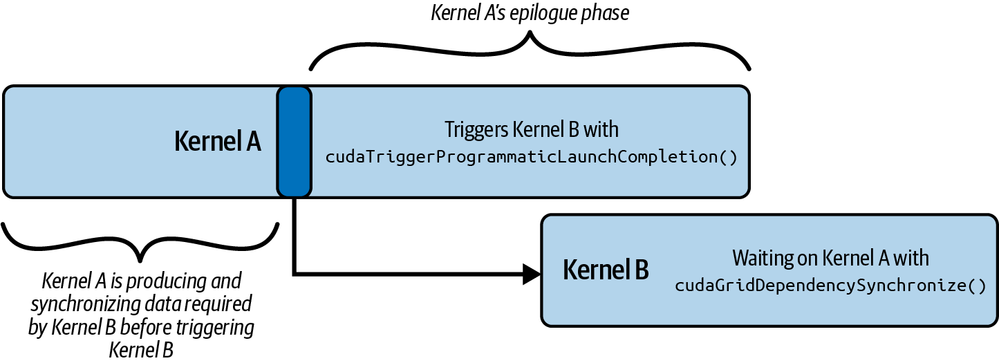
利用 PDL 提供的构造，内核 A 可在其尾声（epilogue）阶段（如收尾阶段）向内核 B 发信号使其执行。这样，内核 A 可与内核 B 短暂并行。需要注意，只有在内核 A 已生成并同步内核 B 所需的所有数据（如 L2/共享内存/全局内存）后，才应触发内核 B 执行。
依赖内核继续处理前，其数据依赖应已在 L2、共享内存、全局内存等位置可见。
这里的代码展示内核 A 使用 cudaTriggerProgrammaticLaunchCompletion() 向内核 B 发信号，表示主要工作已完成。这也通知内核 B：所有必要的全局内存刷新均已发生，可以安全继续：
#include<cuda_runtime.h>#include<cuda_runtime_api.h>// Kernel A must trigger the PDL flag when it's// safe to launch Kernel B__global__voidkernel_A(int*d_ptr){// Perform work that produces data used by// Kernel B// Signals that Kernel A's global-memory// flushes are complete// This enables dependent Kernel B's launchcudaTriggerProgrammaticLaunchCompletion();// ... any further work that can overlap with ......}// Kernel B must wait for Kernel A to write its memory// to global memory and become visible to Kernel B__global__voidkernel_B(int*d_ptr){// Wait on Kernel A to complete.// This ensures the Kernel B waits for the// memory flush before accessing shared datacudaGridDependencySynchronize();// ... dependent work on d_ptr ......}intmain(){// 1) Allocate device bufferint*d_ptr=nullptr;// Allocate an int (example)cudaMalloc((void**)&d_ptr,sizeof(int));// 2) Create a nonblocking stream for maximum overlapcudaStream_tstream;cudaStreamCreateWithFlags(&stream,cudaStreamNonBlocking);// Nonblocking// 3) Define grid/block sizesdim3gridDim(128),blockDim(256);// 4) Launch Kernel A asynchronouslykernel_A<<<gridDim,blockDim,0,stream>>>(d_ptr);// Async launch// 5) Configure PDL for Kernel BcudaLaunchConfig_tlaunch_cfg{};launch_cfg.gridDim=gridDim;launch_cfg.blockDim=blockDim;launch_cfg.dynamicSmemBytes=0;launch_cfg.stream=stream;// Sets the PDL flag so cudaLaunchKernelExC overlaps// with Kernel A's epiloguestaticcudaLaunchAttributeattrs[1];attrs[0].id=cudaLaunchAttributeProgrammaticStreamSerialization;attrs[0].val.programmaticStreamSerializationAllowed=1;launch_cfg.attrs=attrs;launch_cfg.numAttrs=1;// 6) Pack the pointer argumentvoid*kernelArgs[]={&d_ptr};// 7) Launch Kernel B kernel early using PDL// Lookup device pointer for secondary_kernelcudaKernel_tkB;cudaGetKernel(&kB,kernel_B);void*funcPtr_kernel_B=reinterpret_cast<void*>(kB);cudaLaunchKernelExC(&launch_cfg,funcPtr_kernel_B,kernelArgs);// 8) Wait until all work in the stream completescudaStreamSynchronize(stream);// 9) CleanupcudaStreamDestroy(stream);cudaFree(d_ptr);return0;}
这里，Kernel B 通过 cudaGridDependencySynchronize() 等待 Kernel A 发出的程序化启动完成信号。交接发生后，两个内核就可以重叠执行。将 Kernel A 中的触发、Kernel B 中的同步以及主机端的启动属性配合起来，可以尽可能重叠 Kernel A 和 Kernel B。
如本例所示，使用 PDL 时，需要创建 cudaLaunchConfig_t，并在 cudaLaunchKernelExC() CUDA 调用中使用专用属性。具体来说，在主机端，为 Kernel B 的启动配置 cudaLaunchConfig_t，并启用 cudaLaunchAttributeProgrammaticStreamSerialization 属性，以允许提前且重叠地分发。
使用 cudaLaunchAttributeProgrammaticStreamSerialization 调用 cudaLaunchKernelExC()，会告知 CUDA runtime 即使内核 A 尚未完全结束，也可安全地将内核 B 入队。随后 cudaLaunchKernelExC() 以这些扩展属性执行实际启动，并依赖触发机制完成交接。
现在将三种正交技术——PDL、warp 专门化流水线和线程块集群——组合为一个执行模型。
PDL 提供了一种机制，使一个内核能够发出其前导阶段完成的信号，并触发依赖内核执行；随后，前一个内核逐步收尾，而依赖内核逐步启动并执行。
Warp 专门化将每个线程块细分为 producer warp 和 consumer warp。具体而言，producer warp 使用 TMA 异步传输 tile，而计算 warp 执行矩阵乘加（MMA）操作。
线程块集群则使多个线程块运行在彼此邻近的 SM 组上，从而为大规模工作负载提供多 SM 协作和共享内存 multicast。
这些内核间与内核内技术结合起来，可以隐藏 DRAM 延迟、降低内核边界开销并提高 Tensor Core 利用率，形成具有以下特征的流水线：
Warp 专门化通过多阶段流水线，确保每个线程块内的数据传输（producer warp）与计算（consumer warp）充分重叠。
PDL 允许依赖 GEMM 内核的前导阶段（可能处理神经网络的下一层）在主内核完成数据（权重）预取后立即开始，而不必等待整个线程块完全退出。
线程块集群使线程块组能够协同预取（例如 multicast），并在 SM 之间进行动态负载均衡，从而让 producer 和 consumer 任务均匀分布到整个集群。
例如，可以在同一个内核内让模型权重移动（数据传输）与 GEMM（计算）重叠：一个 tile 正在计算时，下一个 tile 已在传输途中。如图 11-10所示，采用 warp 专门化的多阶段软件流水线（阶段 0…N）可通过 PDL 和 mbarrier 原语协调这些角色。
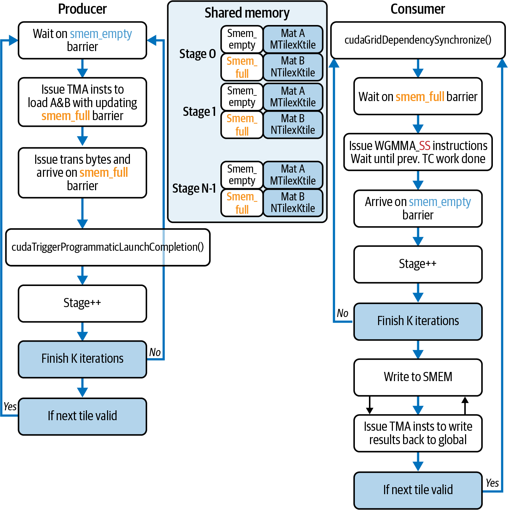
下面的 CUDA C++ 示例展示如何将 PDL、线程块集群和 warp 专门化组合成简单的 TMA 风格异步拷贝 + 计算流水线。具体来说，主内核 primary_gemm 使用 cudaTriggerProgrammaticLaunchCompletion() 向次内核发出信号，表示所有内存刷新已经完成，数据可以读取。因此，次内核 secondary_gemm 可以安全地从 cudaGridDependencySynchronize() 返回并继续执行：
#include<cstdio>#include<cuda_runtime.h>// Cooperative Groups for clusters/barriers#include<cooperative_groups.h>// C++ barrier for TMA-like sync#include<cuda/barrier>// Async copy API#include<cuda/pipeline>namespacecg=cooperative_groups;// Tile size for our toy GEMMconstexprintTILE_M=128;constexprintTILE_K=128;constexprintTILE_N=128;// A very simple “producer/consumer” pipeline within each CTA__global____cluster_dims__(2,1,1)// Compile-time cluster of 2 CTAsvoidprimary_gemm(constfloat*__restrict__A,constfloat*__restrict__B,float*__restrict__C,intM,intN,intK){// Identify thread-block cluster & within-block groupcg::thread_block_clustercluster=cg::this_thread_block_cluster();cg::thread_blockcta=cg::this_thread_block();inttid=threadIdx.x+threadIdx.y*blockDim.x;intwarpId=tid/warpSize;constintnumProducerWarps=1;// Shared-memory tile buffers__shared__floattileA[TILE_M*TILE_K];__shared__floattileB[TILE_K*TILE_N];__shared__cuda::pipeline_shared_state<cuda::thread_scope_block,1>pipe_state;autopipe=cuda::make_pipeline(cta,&pipe_state);autowarp=tiled_partition<32>(cta);pipe.producer_acquire();if(warpId<numProducerWarps){// Producer warps issue copies,// but pipeline collectives are CTA-uniform.cuda::memcpy_async(warp,tileA,A,TILE_M*TILE_K*sizeof(float),pipe);cuda::memcpy_async(warp,tileB,B,TILE_K*TILE_N*sizeof(float),pipe);}pipe.producer_commit();cta.sync();pipe.consumer_wait();// ... perform “compute” on the tile ...// (e.g., a few fused multiply-adds)do_compute();// Inter-CTA cluster-scope sync for load balancingcluster.sync();// Signal to dependent kernel that prologue is donecudaTriggerProgrammaticLaunchCompletion();// ... perform remaining epilogue work ...// ...}__global____cluster_dims__(2,1,1)voidsecondary_gemm(constfloat*__restrict__A,constfloat*__restrict__B,float*__restrict__C,intM,intN,intK){// Wait for primary’s PDL signal before startingcudaGridDependencySynchronize();// Similar warp-specialized pipeline as above...// (Omitted for brevity. Duplicate of primary logic,// but reading from different offsets to compute// next GEMM tile.)}// cudaLaunchKernelExC, cudaGetKernel#include<cuda_runtime_api.h>// cudaLaunchConfig_t#include<cuda/launch_config.h>intmain(){// Problem dimensions (must be multiples of TILE_)intM=TILE_M,N=TILE_N,K=TILE_K;// Allocate and initialize matrices A, B, C on devicefloat*d_A,*d_B,*d_C;cudaMalloc(&d_A,M*K*sizeof(float));cudaMalloc(&d_B,K*N*sizeof(float));cudaMalloc(&d_C,M*N*sizeof(float));// (Initialize d_A, d_B via cudaMemcpy or kernels...)// Create a nonblocking stream for overlapcudaStream_tstream;cudaStreamCreateWithFlags(&stream,cudaStreamNonBlocking);// Launch primary GEMMdim3gridDim(M/TILE_M,N/TILE_N),blockDim(256);primary_gemm<<<gridDim,blockDim,0,stream>>>(d_A,d_B,d_C,M,N,K);// Configure PDL attributes for secondary launchcudaLaunchConfig_tlaunch_cfg={};launch_cfg.gridDim=gridDim;launch_cfg.blockDim=blockDim;launch_cfg.dynamicSmemBytes=0;launch_cfg.stream=stream;staticcudaLaunchAttributeattrs[1];attrs[0].id=cudaLaunchAttributeProgrammaticStreamSerialization;attrs[0].val.programmaticStreamSerializationAllowed=1;launch_cfg.attrs=attrs;launch_cfg.numAttrs=1;// Prepare arguments and get function pointer// for secondary_gemmvoid*kernelArgs[]={&d_A,&d_B,&d_C,&M,&N,&K};cudaKernel_tk;cudaGetKernel(&k,secondary_gemm);void*funcPtr=reinterpret_cast<void*>(k);// Early enqueue of secondary GEMM via PDLcudaLaunchKernelExC(&launch_cfg,funcPtr,kernelArgs);// Wait for everything to finishcudaStreamSynchronize(stream);// CleanupcudaFree(d_A);cudaFree(d_B);cudaFree(d_C);cudaStreamDestroy(stream);return0;}
一个细微但重要的合法性规则是：在本章统一的 block 作用域流水线示例中，参与的 CTA 线程必须以一致顺序执行 producer_acquire/commit 和 consumer_wait/release。仍然可以保留 warp 专门化，只让选定的 warp 在这些集体操作之间发出分阶段拷贝工作。
为保证内存可见性和角色间交接，应在所有权变化处将统一流水线序列与显式的 cta.sync() 同步点结合。如果希望不同 warp 直接调用不同流水线原语，应使用明确 producer/consumer 角色的分区流水线 API，而不要对统一流水线序列进行分支。
在主机端，将主内核 primary_gemm 启动到非阻塞 stream 中，并创建带有 ProgrammaticStreamSerialization 属性的 cudaLaunchConfig_t，再用它通过 cudaLaunchKernelExC 启动次内核 secondary_gemm。
在 primary_gemm 内，调用 cudaTriggerProgrammaticLaunchCompletion() 标记内存刷新完成，使依赖内核可以开始处理，即使主内核尚未完全退出。
随后，依赖内核调用 cudaGridDependencySynchronize()，等待主内核发出的信号和必要的内存刷新完成，从而可以与主内核的收尾阶段并行执行。
在每个线程块内，使用 warp 专门化重叠数据移动与计算。将每个线程块拆分为一个“producer” warp 和多个“consumer” warp 后，producer 在流水线集体操作下发出协作式分阶段拷贝。这可以利用支持 TMA multicast 的路径，将一次 DMA 传输广播到集群中的所有线程块，如图 11-11所示。
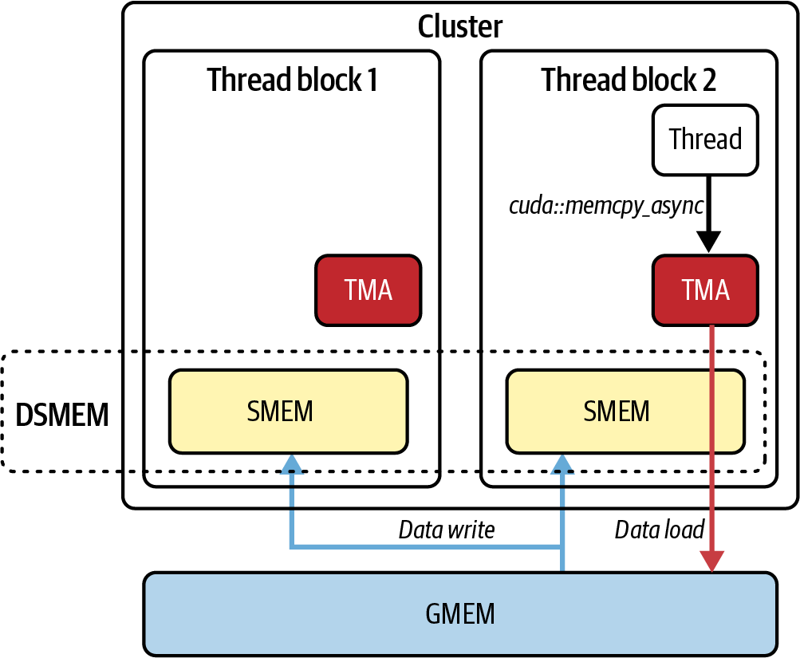
cp.async.bulk.tensor；从属 CTA 使用 cluster.map_shared_rank 消费 tile；流水线集体操作下的协作式分阶段拷贝可驱动此路径，包括基于 cuda::memcpy_async 的实现producer warp 使用 TMA multicast 加载数据时，consumer 会在 C++ block 作用域屏障（cuda::barrier<cuda::thread_scope_block>）上等待，然后执行矩阵乘法步骤（do_compute()）。这样，每个 tile 的加载与融合乘加（FMA）操作就能在细粒度多阶段软件流水线中交错，从而在内核内部隐藏全局内存延迟。
为协调跨 SM 的工作，我们给两个内核都标注 __cluster_dims__(2,1,1)，将两个线程块分组到相邻 SM 上。调用 cluster.sync()（cooperative groups 对 PTX mbarrier 指令的封装）可充当集群范围屏障和共享内存栅栏。这样，集群中的所有线程块都能看到相同的 TMA 加载数据，并动态重新平衡剩余 tile。这种块间协作可以减少 SM 空闲，并提升 warp 专门化流水线的收益。
生产内核通常对二维 tile 使用 Tensor Memory Accelerator（TMA）cp.async.bulk.tensor；当多个线程块需要同一 tile 时，会在线程块集群间进行多播。
可考虑在 Blackwell 上的分块复制期间使用基于描述符的 TMA 归约操作（如 cp.reduce.async.bulk(.tensor)）进行即时归约。将小型归约融合到数据移动流水线时，优先采用基于描述符的加载/存储加上 TMA 归约操作，这可降低寄存器压力并改善重叠。
最后回顾这一高性能 GEMM 流水线的三个特征：
在每个线程块内通过 warp 专门化细分工作：producer warp 在流水线集体操作下发出协作式分阶段 tile 拷贝（例如 cuda::memcpy_async），consumer warp 则在 block 作用域屏障上等待，使数据传输与计算充分重叠。
使用 PDL，通过 cudaTriggerProgrammaticLaunchCompletion() → cudaGridDependencySynchronize() 机制，让下一个 GEMM 内核在主内核完全退出前就开始处理，从而隐藏内核启动开销。
通过使用 __cluster_dims__ 标注内核，代码创建了在相邻 SM 上共同调度的线程块对。再配合调用 cluster.sync()（基于 mbarrier 的集群屏障），这些线程块可以共享 TMA multicast 数据，并在整个 grid 中动态均衡工作负载。
简言之，将带 TMA 的 warp 级流水线、集群级同步与多播，以及使用 PDL 的内核间重叠叠加起来，便形成高度重叠的流水线，能够隐藏 DRAM 延迟、掩盖内核启动开销，并最大化 Tensor Core 利用率。结果是在每个阶段实现高性能 GEMM：warp 内复制、跨线程块屏障和内核交接期间均如此。这些机制协同使硬件保持忙碌并避免停顿。
本章介绍了 CUDA stream、按 stream 排序的内存分配器、基于事件的同步、内核间流水线、线程块集群和 PDL 等高级主题。这些机制有助于为推理和训练工作负载创建高效流水线。主要要点如下：
避免使用 legacy default stream（stream 0），因为它可能使工作串行化并引入隐式同步。应创建显式非阻塞 stream（cudaStreamCreateWithFlags(..., cudaStreamNonBlocking)），让内核和拷贝在没有隐藏同步的情况下并发运行。
使用 cudaMallocAsync 和 cudaFreeAsync 在特定 stream 中分配和释放设备内存。这个非阻塞分配器将请求记录到 stream 队列中，避免设备范围同步，并允许分配与在途内核和拷贝重叠。
将异步主机到设备拷贝（cudaMemcpyAsync）、内核启动和设备到主机拷贝分别安排到不同 stream，可以实现三路重叠。当一个 stream 运行内核时，另一个可以将下一个 batch H2D 拷入，第三个可以将结果 D2H 拷回，从而隐藏延迟并减少空闲时间。
使用 cudaEventRecord 和 cudaStreamWaitEvent 协调跨 stream 的 producer-consumer 依赖，而不阻塞整个 GPU 或 CPU。事件让 consumer stream 精确等待 producer stream 完成拷贝或内核，从而保持较高并发度。
将内核内的 warp 专门化（多角色）、两阶段（双缓冲）流水线与多 stream 启动结合起来。在不同 stream 中启动多个 warp 专门化内核实例（加载 → 计算 → 存储），即可将连续 mini-batch 送入 GPU，把内核内的内存/计算重叠与内核间并发结合起来。
将内核内 warp 专门化流水线扩展到覆盖整个 grid 的线程块集群（协作式启动），可让加载/计算/存储 warp 跨线程块协作。在多个 stream 中启动这些协作式内核时，后续 batch 的主机端分配和拷贝可以与协作式内核执行重叠。
Kernel A 的数据写入刷新后调用 cudaTriggerProgrammaticLaunchCompletion()，Kernel B 使用 cudaGridDependencySynchronize() 等待该信号。这允许 Kernel B 的前导阶段开始，并与 A 的收尾阶段重叠，无需 CPU 介入。
主机通过 cudaLaunchKernelExC() 和 cudaLaunchConfig_t 配置 Kernel B 的启动，并设置 cudaLaunchAttributeProgrammaticStreamSerialization。这允许驱动提前将 B 入队，以最大化内核间重叠。PDL 在主内核中使用 cudaTriggerProgrammaticLaunchCompletion，在依赖内核中使用 cudaGridDependencySynchronize，并在主机端设置 cudaLaunchAttributeProgrammaticStreamSerialization 启动属性。
总之，借助 CUDA stream 的内核间并发，已经从手动优化逐渐发展为现代 AI 框架和 GPU runtime 使用的自动化能力。理解 stream、资源占用率和同步点等核心原则后，开发者就能更充分地利用 GPU。
在现代工作负载中，内核间并发对于最大化 GPU 利用率至关重要：它可以在单个 GPU 内部以及多个 GPU 之间重叠内核执行和数据传输。随着硬件增加更多并行能力、软件抽象掉更多调度复杂性，理解如何最大化并发，已成为充分发挥高性能 AI 系统硬件能力的关键。
本章演示了如何跨多个 CUDA stream 编排内核、内存操作和分配，使 GPU 的各类硬件单元保持活跃，包括计算流水线、DMA 引擎和互连。CUDA stream 是将内核、内存操作和分配安排到独立队列中的基础机制，使 GPU 的计算引擎与 DMA 引擎能够同时运行。
通过避免 default stream 的隐藏屏障、利用按 stream 排序的分配器、使用事件进行精确同步，并将内核内 warp 专门化与内核间多 stream 流水线结合起来（扩展第 10 章介绍的线程块集群），即使面对复杂 LLM 工作负载，也有机会实现接近峰值的利用率。
在多 GPU 场景中，在不同 stream 上重叠点对点传输、集合通信和计算，可以进一步减少空闲时间。我们还回顾了第 10 章的相关内容，展示如何使用 CUDA Graph 捕获这些 stream 工作流，以降低重复迭代的 CPU 开销。
下一章将在这些原则之上进一步介绍使用动态并行和 CUDA Graph 的动态内核编排与元调度。我们将在运行时协调完整的内核与数据移动流水线，以适应不断变化的工作负载。这种动态资源均衡和设备端编排将把大规模 AI 系统的性能优化推进到更高层次。